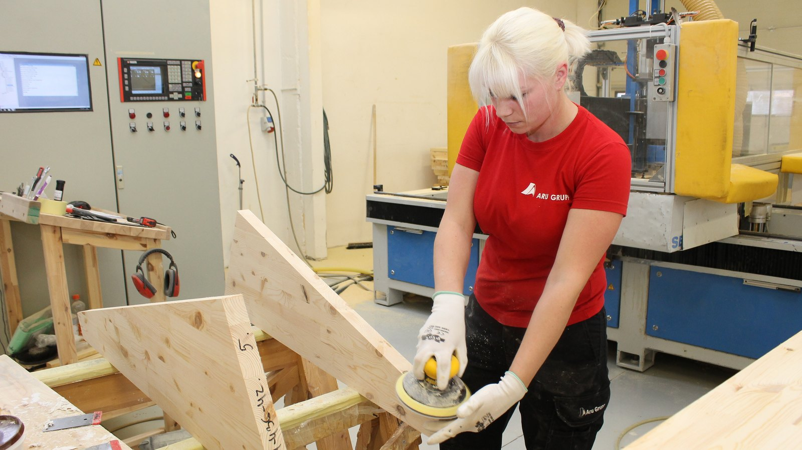

Sans JavaScript, tous les onglets restent visibles à la suite.
Présentation de la séquence
Une menuisière ponce une pièce : la photographie montre un geste, mais ni le nom de la machine, ni la précision qu'il faut, ni ce que la personne a appris pour le faire. Pour qu'un savoir-faire existe aux yeux des autres, il faut aussi savoir le dire, l'écrire et le lire.
Problématique
Si je ne trouve pas les mots pour dire mon métier, que reste-t-il invisible de ce que je sais faire ?
Programme et cadre
- Niveau : seconde professionnelle, français, toutes filières. Élèves allophones : lexiques, débuts de phrase et version dys.
- Programme : arrêté du 3 avril 2019, BO spécial n° 5 du 11 avril 2019 ; annexe du programme, perspective d'étude « Dire, écrire, lire le métier ». En lien avec les objets d'étude « Devenir soi : écritures autobiographiques » et « Dire et se faire entendre : la parole, le théâtre, l'éloquence ».
- Co-intervention : le programme situe la lecture d'œuvres liées au champ professionnel « dans le cadre de la co-intervention et non pas dans le cours disciplinaire ». La séquence se mène donc de préférence avec le professeur d'enseignement professionnel, qui valide les termes, les gestes évoqués et les limites d'action d'un élève en stage. Depuis la rentrée 2024, les volumes horaires de seconde et de première sont fixés par l'arrêté du 22 janvier 2024 (Éduscol, la co-intervention) : vérifier l'emploi du temps local.
- Durée : six séances de 52 minutes. Aucun achat ; aucune inscription ; un appareil d'enregistrement de l'établissement pour l'oral final.
- Production finale : un oral de trois minutes (un geste, un outil défini, une qualité prouvée par un exemple, une contrainte, une réponse nuancée), un message professionnel bref et une relecture personnelle notée.
- Sécurité et confidentialité : aucune donnée réelle sur un client, un patient, une entreprise ; les situations hypothétiques ne remplacent jamais les consignes techniques de sécurité, qui relèvent de l'enseignement professionnel.
Objectifs et directives
1. Dire le métier
« Les présentations de soi attendues dans le monde professionnel trouvent un écho et un prolongement dans les différentes activités et réflexions menées à travers l'objet d'étude « Devenir soi : écritures autobiographiques ». »
Présentation diagnostique (1), demande dite au binôme (3), action observée ou réalisée (4), oral final de trois minutes enregistré en binôme (6).
2. Écrire le métier
« La perspective d'étude peut également tirer parti de l'étude des écrits épistolaires, qu'il convient dès lors de situer dans la diversité des courriers et courriels, pour analyser les variétés de destinataires, d'enjeux et donc d'écriture. »
Courriel C, premier message (3), compte rendu (4), message d'évaluation (5), message final relu (6).
3. Lire le métier
« Pour construire son identité professionnelle, l'élève doit connaître le passé et la tradition du métier, comme des images sociales auxquelles ce métier est inextricablement mêlé. »
Photographie, fiche Onisep, témoignage vidéo, extrait de Germinal (1, 2) ; documents professionnels fictifs (3, 4, 5).
4. Étudier la langue
« L'orthographe grammaticale s'enseigne à partir d'une observation des erreurs les plus fréquentes »
Une leçon, des exercices, un contrôle noté de 5 minutes avec barème et grille d'autocorrection à chaque séance ordinaire ; partie langue séparée /6 aux deux évaluations ; relecture personnelle notée /4 ; Projet Voltaire si les comptes existent.
5. Confronter les représentations
« La littérature et les arts constituent un vivier de représentations et de réflexions sur le monde du travail, dans la diversité de ses facettes, qu'il peut être intéressant de confronter, à deux voix, aux réalités présentes »
Germinal (1885) confronté à une fiche et au témoignage d'une menuisière d'aujourd'hui, sans confondre une mine de 1866 et les métiers actuels.
Citations : annexe du programme de français de seconde professionnelle, perspective d'étude « Dire, écrire, lire le métier » et « Connaissance et maîtrise de la langue », 2019.
Le corpus et son mode d'emploi
- Document P : une menuisière au travail, photographie de 2014 (licence libre).
- Documents B1 et B3 : carte reformulée d'après la fiche Onisep « Menuisier / Menuisière », et vidéo « Menuisière » de l'Onisep (Élise, Nancy, octobre 2023), consultée sur le site officiel.
- Document B2 : Émile Zola, Germinal, 1885, première partie, chapitre IV : Maheu au fond de la mine. Texte intégral du domaine public, coupe signalée.
- Documents A, C, D1, D2, E, F : écrits professionnels et récits fictifs, rédigés pour la classe et signalés comme tels.
Pourquoi Germinal : un intitulé de métier ne montre ni un geste, ni une difficulté, ni ce qu'une personne ressent. Zola fait sentir le travail du corps ; on ne confond pas pour autant une scène romanesque de 1885 avec les conditions de tous les métiers d'aujourd'hui. Autres œuvres proposées par le programme, selon les filières : Au Bonheur des Dames (relation client), Vingt mille lieues sous les mers (électricité), Naissance d'un pont (bâtiment). Les textes encore protégés ne sont pas reproduits.
Cinq familles de métiers
Ces cartes sont des situations pédagogiques fictives, pas des procédures. Le raisonnement reste le même pour tous : documenter un fait, définir un terme, justifier une qualité, distinguer le certain de l'incertain. Seul le lexique change. Un élève peut choisir une autre carte ou son métier réel, après validation des mots par le professeur d'enseignement professionnel.
| Famille | Métier, fiche Onisep | Situation fictive | Mots à définir | Qualité à prouver | Question pour penser |
|---|---|---|---|---|---|
| Bois et bâtiment | menuisier, menuisière | J'observe le ponçage d'une pièce ; je note le nom de la machine à faire confirmer. | ponceuse : machine qui rend une surface lisse ; plan : dessin coté d'un ouvrage | précision : vérifier une mesure avant de couper | Nommer un geste suffit-il à savoir le faire ? |
| Alimentation | boulanger, boulangère | J'observe le façonnage ; je demande le nom de l'outil qui sert à diviser la pâte. | pétrin : équipement qui travaille la pâte ; façonnage : mise en forme des pâtons | rigueur : respecter les temps et l'hygiène | Une fiche dit-elle la chaleur du fournil ? |
| Commerce et accueil | vendeur, vendeuse | J'écoute une demande de disponibilité ; une référence manque, je la demande avant de répondre. | référence : code qui identifie un article ; réassort : remise en rayon | écoute : reformuler la demande avant de répondre | Être aimable suffit-il si l'information est fausse ? |
| Services aux personnes | aide-soignant, aide-soignante | J'observe une transmission entre professionnelles ; j'écris un besoin matériel entièrement anonyme. Je ne décris aucun soin. | transmission : information utile passée au relais ; confidentialité : protection des informations | discrétion : dire seulement l'utile, à la bonne personne | Tout dire permet-il toujours de mieux aider ? |
| Électricité et maintenance | électricien, électricienne | J'observe un essai de mise en service avec le tuteur ; je ne touche à aucune installation. | disjoncteur : appareil qui coupe le courant en cas de défaut ; raccordement : liaison de deux éléments | méthode : avancer étape par étape et contrôler | Un message imprécis peut-il créer un risque ? |
La spirale de Gorse
Un tour par séance, de la présentation de soi à ce que les mots rendent visible. La question est à l'extérieur, la réponse à l'intérieur ; la pointe reste un problème à discuter. En séance 2, la lecture de Germinal suit les cinq gestes de la méthode : je remarque, je repère, je comprends, j'anticipe, je trouve le sens.
- 1Que dit de moi une présentation ?Ce que je fais et ce que j'apprends, choisi pour celui qui m'écoute ; pas toute ma vie.
- 2Que montre un roman qu'une fiche ne montre pas ?Ce que le travail fait au corps et ce que ressent une personne ; la fiche donne des tâches.
- 3Un message peut-il faire avancer le travail ?Oui, s'il dit qui écrit, ce qui manque et ce qui est attendu : il évite une erreur.
- 4Faut-il tout dire de ce qu'on a vécu ?Non : je raconte pour moi, je rends compte pour qu'un autre comprenne et agisse.
- 5Une erreur dit-elle qui je suis ?Non : elle dit ce que je dois reprendre ; une correction se prend, elle ne juge pas.
- 6Que rendent visible mes mots ?Des gestes, des savoirs, une attention ; et aussi ce que je dois encore apprendre.
À la pointe. Bien parler de son métier ne signifie pas déjà savoir le faire. Les mots rendent le travail visible et permettent d'apprendre, de coopérer, d'être reconnu ; ils ne remplacent ni la formation ni la pratique. La question reste ouverte : que perd-on quand un savoir-faire n'est jamais dit ?
Les séances
| Séance | Titre | Supports | Langue |
|---|---|---|---|
| 1 | Je me présente sans me raconter entièrement. Diagnostic | photographie P ; document A | Les classes de mots ; le sujet et le verbe au présent |
| 2 | Un métier se lit-il comme un roman ? | fiche B1 ; vidéo B3 ; Germinal B2 | L'imparfait, la relative, la définition d'un terme |
| 3 | Un message peut-il faire avancer le travail ? | courriel C | Le conditionnel de demande ; pour + infinitif ; pour que |
| 4 | J'ai vécu une scène : comment en rendre compte ? | récit D1 ; compte rendu D2 | Imparfait et passé composé ; le participe passé avec avoir ; actif et passif |
| 5 | Évaluation de mi-parcours. Faire le point et savoir prendre une correction | document E (inédit) ; rappel de B2 | Partie langue de la mi-parcours (/6) |
| 6 | Évaluation finale. Faire entendre un savoir-faire | document F ; oral et message | Partie langue de l'évaluation finale (/6) |
Contrat de travail
- Je peux parler à travers Sam ou un métier exploré : personne n'a à révéler sa vie ni son orientation.
- Je ne donne aucune information réelle sur un client, un patient, un collègue ou une entreprise.
- Je distingue ce que j'ai observé, ce que j'ai fait et ce que je dois encore faire confirmer.
- Je ne présente aucun geste dangereux comme une procédure : la sécurité s'apprend en atelier.
- On commente un choix de mots, jamais une personne, un accent ou une filière.
- Je garde brouillons, grilles et corrections dans une pochette : les progrès comptent.
Les évaluations
| Quand | Épreuve | Barème |
|---|---|---|
| 1 | Diagnostic écrit et oral | non noté |
| 1 à 4 | Contrôle de langue, 5 minutes | /6, barème et grille |
| 3 | Bilan sur le premier message | formatif |
| 5 | Mi-parcours : lecture et message | /20, et langue séparée /6 |
| 5 | Savoir prendre une correction | /4 |
| 6 | Oral /20, message /10 | /30, et langue séparée /6, relecture personnelle /4 |
Ce qui existe déjà sur le site, et ce qui change
- Rendre compte d’une PFMP, option motocycles propose un compte rendu complet de stage et la transition vers l'oral : il n'est pas refait ici. La séance 4 prend un autre angle, commun à toutes les filières : la même matinée racontée puis rendue utile pour un tuteur.
- Préparer l’écrit du bac professionnel concerne la terminale : simple prolongement.
- Devenir soi travaille la présentation de soi à partir d'une œuvre d'art ; ici, la présentation est professionnelle et choisie pour un destinataire.
- Le Carnet du chef-d’œuvre aide à préparer la présentation d'un projet ; il n'est pas reproduit.
Téléchargements
Fiche professeur
PDF · Word · LibreOffice
Fiches élèves, une activité par page
PDF · Word · LibreOffice
Fiches élèves en gros caractères
PDF · Word · LibreOffice
Version dys
PDF · Word · LibreOffice
Évaluations : sujets élèves
PDF · Word · LibreOffice
Corrigés et grilles (professeur)
PDF · Word · LibreOffice
Savoir prendre une correction et autocorrection
PDF · Word · LibreOffice
Textes et documents
PDF · Word · LibreOffice
Crédits et sources
En-tête et document P : photo Rein Sikk, « Aru Grupp 02 », 2014, CC BY-SA 3.0, Wikimedia Commons (recadrage léger). Extrait de Germinal : domaine public. Vidéo et fiches Onisep : consultées par lien, non reproduites ; la carte B1 est une reformulation. Documents A, C, D, E et F : écrits pour la classe.
- Photographie, Wikimedia Commons
- Germinal, Projet Gutenberg
- Vidéo « Menuisière », Onisep TV
- Fiche Onisep « Menuisier / Menuisière »
- Fiche Onisep « Boulanger / Boulangère »
- Fiche Onisep « Vendeur / Vendeuse en magasin »
- Fiche Onisep « Aide-soignant / Aide-soignante »
- Fiche Onisep « Électricien installateur / Électricienne installatrice »
- Annexe du programme, BO spécial n° 5 du 11 avril 2019
© 2026 Madame Carole Paoli Pompougnac · CC BY-NC-SA 4.0
Fiches élèves en PDF Word LibreOffice
Séance 1. Je me présente sans me raconter entièrement. Diagnostic
Durée : 52 minutes. Compétences : LectureÉcritureOralLangue
Objectifs : observer ce qu'une image et un texte disent d'un métier ; choisir les informations utiles pour se présenter dans un cadre professionnel, sans exposer sa vie privée ; faire un diagnostic non noté de la lecture, de l'écrit, de l'oral et de la langue ; entrer dans la spirale de Gorse ; reconnaître les classes de mots et accorder le verbe avec son sujet au présent.
Matériel : document P projeté ; document A et fiche élève 1 ; tableau des variantes imprimé ; deux bandes de papier par élève pour les cartes mémoire.
Déroulé minute par minute
| Minutes | Ce qui se passe | Ce que dit ou fait le professeur |
|---|---|---|
| 0 à 3 | Rituel d'entrée. Accueil à la porte, date et titre dans le cahier. Phrase du jour, dictée flash : « Je demande une consigne avant d'agir. » | Je dicte la phrase ; trente secondes de vérification seul, puis la correction au tableau. Deux élèves disent ce qu'elle leur fait penser. |
| 3 à 8 | Activité 1. La photographie P : ce que je vois, ce que je peux supposer, ce que je ne sais pas. | « Une image montre un geste ; elle ne dit pas tout. Qu'est-ce qu'il faudrait demander à cette personne ? » |
| 8 à 12 | Activité 2. Lecture du document A et quatre questions. | Je lis A à voix haute ; chacun suit avec une règle. « Sam choisit ce qu'il dit : à qui, et pourquoi ? » |
| 12 à 20 | Activité 3. Diagnostic écrit : ma présentation en quatre phrases, à partir d'une carte de métier. | « Choisissez d'abord, écrivez ensuite. Vous pouvez parler à travers Sam. » Je lis une consigne à qui en a besoin, sans donner la réponse. |
| 20 à 24 | Activité 4. Binômes : 45 secondes de présentation chacun, l'autre reformule une information. | « Écouter, c'est pouvoir redire une idée, pas guetter une faute. » J'écoute quelques binômes et je note des besoins. |
| 24 à 27 | Spirale de Gorse, tour 1 : « Que dit de moi une présentation ? » Réponse commune notée. | « Nous partons d'une question large ; chaque séance la resserre. » |
| 27 à 40 | Étude de la langue : classes de mots, sujet et verbe au présent ; exercices ; contrôle noté de 5 minutes ; correction et carte mémoire. | « Pour dire clairement ce que je fais, je trouve qui agit et le verbe qui lui correspond. » |
| 40 à 43 | Projet Voltaire (3 minutes), seulement si les comptes de l'établissement sont déjà ouverts : accord du verbe avec son sujet, présent. Sinon, ou sans connexion : l'exercice papier signalé dans l'étude de la langue. | « Une règle, quelques minutes, puis vous vérifiez une de vos propres phrases. » Je n'annonce ni niveau ni module que je n'ai pas vérifiés. |
| 43 à 49 | Reprise : j'améliore une phrase de ma présentation avec un mot plus précis ; trace écrite copiée. | « Une qualité se montre par un exemple : remplacez “je suis sérieux” par une action. » |
| 49 à 52 | Rituel de sortie. Billet de sortie : « Dans une présentation professionnelle, je dis ... et je garde pour moi ... » ; devoir noté dans l'agenda. | Je ramasse les billets à la porte ; je vérifie que le devoir est noté. La séance suivante commence par la lecture de deux billets. |
Activité 1. Lire une photographie de travail LectureOral
Pour l'enseignant. Projeter le document P. Ne pas faire deviner un « bon » métier : le but est de séparer l'observation de la supposition.
Pour les élèves.
Document P · Une menuisière au travail, photographie

Une photographie montre un geste à un instant. Elle ne dit ni le nom exact de l'outil, ni les consignes de sécurité de l'atelier, ni ce que la personne ressent : on le vérifie ailleurs.
| Je vois (un fait) | Je suppose (avec un indice) | Je ne sais pas (à demander) |
|---|---|---|
Corrigé (prof)
Je vois : une personne ponce une pièce de bois ; elle porte des gants ; un casque antibruit est posé ; une grande machine est derrière elle. Je suppose : c'est un atelier de menuiserie ou de fabrication en bois (indices : planches, machine, poussière). Je ne sais pas : le nom exact de la machine, la pièce fabriquée, les consignes de sécurité, ce qu'elle pense de son travail.
Activité 2. Lire avant de se présenter Lecture
Pour les élèves.
Document A · « Je suis en formation »
Sam est un personnage : chacun peut parler à travers lui, sans rien révéler de sa vie.
- 1 Je m'appelle Sam. Je suis en seconde professionnelle.
- 2 Je prépare un métier dans lequel la précision est importante.
- 3 J'observe les gestes et je demande une consigne avant d'agir.
- 4 Je sais écouter une explication, mais je cherche encore certains mots.
- 5 Je voudrais présenter un outil en expliquant son utilité.
- 6 Je ne raconte pas toute ma vie : je choisis ce qui aide mon interlocuteur.
Texte pédagogique fictif écrit pour la classe, Madame Carole Paoli Pompougnac, 2026. Aucune personne, entreprise ni adresse réelle.
- À qui cette présentation pourrait-elle être utile : à un tuteur qui accueille Sam, ou à un ami qui connaît toute sa vie ? Justifie avec un mot du texte.
- Recopie une action que Sam sait déjà faire.
- Qu'est-ce que Sam ne prétend pas encore maîtriser ?
- Complète : « Sam choisit ... parce que ... »
Corrigé (prof)
1. À un tuteur : « avant d'agir », « mon interlocuteur » (phrases 3 et 6). 2. « J'observe les gestes », « je demande une consigne », « je sais écouter ». 3. Certains mots (phrase 4). 4. Sam choisit ce qui aide son interlocuteur, parce qu'une présentation professionnelle sert à travailler ensemble, pas à tout raconter.
Activité 3. Ma présentation diagnostique Écriture
Pour l'enseignant. Diagnostic non noté. Relever trois besoins par élève dans le tableau de suivi (onglet Langue) : lecture, écrit, langue. Ce n'est pas un test national.
Pour les élèves.
Ma carte de métier. Je choisis une famille dans le tableau des variantes (onglet Accueil), ou le métier que je prépare réellement, après validation des mots par le professeur d'enseignement professionnel. Je peux en changer.
Complète les quatre phrases.
- « Je suis en formation dans ... »
- « J'observe ou j'apprends à ... »
- « Une qualité utile est ... parce que ... »
- « Je dois encore apprendre à ... »
Modèle, à ne pas recopier comme sa propre expérience : « Je suis en formation dans les métiers de l'accueil. J'apprends à écouter une demande. La précision est utile parce qu'elle évite de donner une information floue. Je dois encore apprendre à expliquer certaines références. »
Corrigé (prof)
Critères observés : une formation ou un métier nommé ; une action au présent ; une qualité reliée à une raison (« parce que ») ; une limite assumée ; aucune information privée inutile. Langue : majuscule, point, accord sujet-verbe.
Activité 4. Dire et reformuler Oral
« Ici, on peut hésiter. On commente un choix de mots, jamais une personne. »
Pour les élèves.
Je dis ma présentation en 45 secondes, sans la lire mot à mot. Mon binôme redit une information : « Tu as dit que ... ». Puis on échange les rôles.
Spirale de Gorse, tour 1 OralÉcriture
Pour les élèves.
Que dit de moi une présentation ? J'écris une idée courte (à l'extérieur) et le mot du document A qui la soutient (à l'intérieur).
Corrigé (prof)
Réponse commune possible : elle dit ce que je fais et ce que j'apprends, choisi pour la personne qui m'écoute ; elle ne dit pas toute ma vie (A, phrase 6).
Étude de la langue · Les classes de mots ; le sujet et le verbe au présent Langue
Pour les élèves. Étude de la langue.
La leçon
- Chaque mot a une classe : nom (consigne, outil), déterminant (une, le, mon), pronom (je, nous, il), verbe (observer, demander), adjectif (important, précis).
- Le sujet dit qui fait l'action ; le verbe s'accorde avec lui. « Je demande. » « Nous demandons. » « Les tuteurs expliquent. »
- Présent de demander : je demande, tu demandes, il demande, nous demandons, vous demandez, ils demandent. Être : je suis, tu es, il est, nous sommes, vous êtes, ils sont.
- Pour vérifier : je pose la question « qui est-ce qui ... ? » devant le verbe.
Je m'entraîne
- Donne la classe des mots soulignés : « Je demande une consigne importante. »
- Mets au pluriel : « Je demande une consigne. » → « Nous ... » ; « Je suis en formation. » → « Nous ... »
- Souligne le sujet : « Avant d'agir, Sam observe les gestes. »
- Écris une phrase au présent sur ton métier avec « parce que ». (Exercice papier pour le créneau Projet Voltaire : exercices 2 et 3 refaits sans regarder.)
Contrôle de langue noté (5 minutes, /6)
- Classe de « je » dans « Je demande » ? (/1)
- Classe de « consigne » ? (/1)
- Conjugue « demander » avec « nous » au présent. (/1)
- Conjugue « être » avec « nous » au présent. (/1)
- Complète avec un déterminant et un nom précis : « J'attends ... avant d'agir. » (/1)
- Recopie avec majuscule et point : « je demande une consigne » (/1)
Grille d'autocorrection
| Je sais... | Oui | Pas encore |
|---|---|---|
| reconnaître un nom, un pronom, un verbe, un adjectif | □ | □ |
| trouver le sujet d'un verbe | □ | □ |
| conjuguer demander et être au présent | □ | □ |
| commencer par une majuscule et finir par un point | □ | □ |
Si je coche « pas encore », je fabrique une carte mémoire : au recto la difficulté, au verso la règle et une phrase du document du jour.
Corrigé (prof)
Corrigé des exercices.
1. pronom, déterminant, nom, adjectif. 2. Nous demandons une consigne ; nous sommes en formation. 3. Sam. 4. Exemple : « Je demande une consigne parce que je veux comprendre avant d'agir. » On vérifie le sens et la terminaison, sans imposer la phrase.
Contrôle : corrigé et barème (/6).
1. pronom ; 2. nom ; 3. demandons ; 4. sommes ; 5. « une consigne » ou tout groupe déterminant + nom précis ; 6. « Je demande une consigne. » (0,5 majuscule, 0,5 point). Un point par item. Les quatre premiers points alimentent aussi le diagnostic.
Trace écrite
À copier dans le cahier.
Se présenter dans un cadre professionnel, c'est choisir des informations utiles au destinataire : ce que j'apprends, ce que je sais faire, ce que je dois encore apprendre. Une qualité se montre par un exemple. Je ne suis pas obligé de raconter ma vie.
Pour la prochaine fois
Travail à la maison.
Relis A et révise tes deux cartes mémoire. Prépare une présentation de 30 secondes avec les quatre amorces ; dis-la à quelqu'un ou à voix basse, sans enregistrement à envoyer. Rapporte une phrase que tu veux améliorer.
Tempête émotionnelle
Exercice d'intensité (40 secondes, pendant l'activité 4, sans obligation). Sam peut être inquiet le premier jour. Celui qui le souhaite dit à voix normale : « Je suis un peu inquiet », « Je suis inquiet », « Je suis très inquiet », puis revient à : « Je peux demander une consigne. » Les autres suivent les trois cartes du doigt. Ce n'est ni un récit intime ni une thérapie. Un élève qui ne veut pas parler de lui garde Sam ; son orientation n'est jamais discutée devant la classe.
Sorties de secours (plan B)
- Sortie de secours, huit minutes : de 41 à 49 si la séance a pris du retard : recopier sans erreur une phrase de A que je comprends (2 min) ; compléter « Je suis en formation dans ... » et « Je dois encore apprendre ... » (3 min) ; vérifier sujet, verbe, majuscule et point (2 min) ; une carte mémoire (1 min). Le contrôle de langue est gardé.
- Plan B, pas de vidéoprojecteur : le document P est décrit par le professeur, ou imprimé en noir et blanc ; le tableau trois colonnes est fait à l'oral.
- Oral impossible ou classe agitée : chacun dit sa présentation à voix basse au professeur pendant qu'il circule, ou l'écrit ; l'oral non entendu est repris en séance 2, pas inventé.
- Plus de temps : écrire la présentation de Sam pour un client, puis pour un ami, et dire ce qui change.
Séance 1 · Version dys
Même question, même production, avec des aides. Le professeur lit le document A avec toi.
- Sam parle à : □ un tuteur □ un ami qui sait tout de lui.
- Une chose que Sam sait faire : □ observer les gestes □ réparer seul une machine.
- Sam ne dit pas toute sa vie : □ vrai □ faux.
Écris ta présentation avec les débuts de phrase. Tu peux garder Sam.
- Je suis en formation dans ...
- J'apprends à ...
- Une qualité utile est ... parce que ...
- Je dois encore apprendre à ...
Langue. Entoure le verbe et souligne le sujet : « Nous demandons une consigne. » Complète : « Je ... (être) en formation. »
Le contrôle est le même, lu à voix haute ; réponses courtes acceptées.
© 2026 Madame Carole Paoli Pompougnac · CC BY-NC-SA 4.0
Fiches élèves en PDF Word LibreOffice
Séance 2. Un métier se lit-il comme un roman ?
Durée : 52 minutes. Compétences : LectureÉcritureOralLangue
Objectifs : distinguer trois manières d'approcher le travail : la fiche qui informe, la vidéo qui fait témoigner, le roman qui fait ressentir ; lire un extrait de Germinal avec la spirale de Gorse ; reconnaître l'imparfait de description et la proposition relative ; définir un terme technique sans tourner en rond.
Matériel : documents B1, B2 et B3 ; accès à la vidéo de l'Onisep vérifié avant le cours ; fiche élève 2 ; surligneurs.
Déroulé minute par minute
| Minutes | Ce qui se passe | Ce que dit ou fait le professeur |
|---|---|---|
| 0 à 3 | Rituel d'entrée. Accueil à la porte, date et titre dans le cahier. Phrase du jour, dictée flash : « L'air ne circulait pas. » | Je dis la phrase deux fois, puis : « Cette phrase donne-t-elle seulement une information ? » Dictée, vérification, correction. |
| 3 à 8 | Activité 1. La fiche B1 : souligner un geste, encadrer un outil ou une machine, entourer une condition de travail. | « Nous commençons par un document qui organise des informations. » |
| 8 à 13 | Activité 2. La vidéo B3, début seulement (jusqu'aux trois étapes) : noter les étapes, un matériau, une qualité. | « Ce que vous n'entendez pas n'est pas à inventer : écrivez “non entendu”. » Plan B : je lis le résumé B3. |
| 13 à 16 | Activité 3. Lecture à voix haute de B2, dix secondes de silence, un mot d'impression par binôme. | « Nous ne cherchons plus une liste de missions : nous écoutons comment un personnage vit son travail. » |
| 16 à 26 | Activité 4. Spirale de Gorse sur B2 : je remarque, je repère, je comprends, j'anticipe, je trouve le sens ; exercice d'intensité inclus. | Deux minutes par étape ; chacun remplit au moins une idée et son appui avant la mise en commun. |
| 26 à 29 | Projet Voltaire (3 minutes), seulement si les comptes de l'établissement sont déjà ouverts : accord du verbe avec un sujet éloigné ou pluriel. Sinon, ou sans connexion : l'exercice papier signalé dans l'étude de la langue. | « Une règle, quelques minutes, puis vous vérifiez une de vos propres phrases. » Je n'annonce ni niveau ni module que je n'ai pas vérifiés. |
| 29 à 42 | Étude de la langue : l'imparfait, la relative, la définition d'un terme ; exercices ; contrôle noté de 5 minutes ; correction et carte mémoire. | « Les verbes installent une durée ; la relative ajoute une précision qui change notre regard sur la lampe. » |
| 42 à 49 | Activité 5. Écrire deux phrases qui comparent la fiche et le roman ; spirale tour 2 ; trace écrite. | « Vous pouvez proposer un sens, mais vous devez montrer où vous l'avez trouvé. » |
| 49 à 52 | Rituel de sortie. Billet de sortie : « La fiche m'apprend ... ; le roman me fait sentir ... » ; devoir noté dans l'agenda. | Je ramasse les billets à la porte ; je vérifie que le devoir est noté. La séance suivante commence par la lecture de deux billets. |
Activité 1. Lire une fiche métier Lecture
Pour les élèves.
Document B1 · Carte documentaire : le menuisier, la menuisière
- 1 Le menuisier ou la menuisière fabrique surtout sur mesure des portes, des fenêtres, des placards ou des escaliers.
- 2 À partir de relevés ou de plans, il ou elle choisit le matériau et calcule la quantité nécessaire.
- 3 Il ou elle trace les éléments, les découpe, les ajuste, les ponce, puis les pose et assure les finitions.
- 4 Le bois reste le matériau principal, mais le métier utilise aussi l'aluminium, le plastique ou des matériaux composites.
- 5 Il faut savoir lire un plan, maîtriser la géométrie et le calcul, et manier les outils et les machines en sécurité.
- 6 Le travail se fait souvent en atelier, puis sur un chantier, en lien avec d'autres corps de métiers et avec le client.
Reformulation pédagogique de la fiche Onisep « Menuisier / Menuisière », consultée le 15 novembre 2026. Ce n'est pas une citation de la fiche. Cette carte sert à lire et à reformuler, jamais à apprendre une procédure : techniques et sécurité relèvent de l'enseignement professionnel.
- relevé
- mesures prises sur place
- poncer
- rendre une surface lisse en la frottant avec un abrasif
- finitions
- derniers travaux qui rendent l'ouvrage propre et durable
- corps de métier
- ensemble des professionnels d'une même spécialité sur un chantier
Souligne un geste, encadre un outil ou une machine, entoure une condition de travail. Puis réponds : la fiche cherche surtout à □ raconter une journée □ organiser des informations sur un métier.
Corrigé (prof)
Gestes : tracer, découper, ajuster, poncer, poser (phrase 3). Outils, machines : outils et machines (5), plans (2). Conditions : atelier puis chantier, travail avec d'autres corps de métiers (6). La fiche organise des informations.
Activité 2. Écouter une professionnelle ÉcouteLecture
Pour l'enseignant. Projeter la vidéo depuis la page de l'Onisep (vérifier le lecteur avant le cours). Arrêter après l'énoncé des trois étapes ; au besoin, lire le résumé B3.
Pour les élèves.
Document B3 · Vidéo : « Menuisière », Onisep TV
Élise, menuisière dans une entreprise de Nancy, présente son travail. Vidéo de l'Onisep publiée en octobre 2023, avec une transcription sur la page officielle.
Ce que l'on y apprend (résumé écrit pour la classe, non une transcription) :
- Élise fabrique et assemble des portes, des escaliers et des dressings, surtout en chêne et en panneaux de bois.
- Elle travaille surtout en atelier, parfois sur le chantier chez les clients.
- Elle nomme trois étapes : débiter le bois, l'usiner (percer, faire des rainures), puis assembler.
- Elle cite des qualités : aimer travailler en équipe, ne pas avoir peur des mathématiques, se repérer dans l'espace à partir d'un plan.
- Elle évoque une contrainte, un travail assez physique, et une évolution : la commande numérique prend de plus en plus de place.
Page officielle de la vidéo et transcription, Onisep TV. La vidéo est consultée sur le site de l'Onisep, sans copie ni téléchargement. Durée non affichée par la page : la transcription compte environ 400 mots, soit quelques minutes ; on n'en projette que le début, jusqu'aux trois étapes. Une seule courte formule d'Élise est citée dans la séquence. Variante alimentation : « Boulangère », Onisep TV, avril 2025.
- débiter
- découper une pièce brute aux dimensions de départ
- usiner
- façonner une pièce avec une machine
- rainure
- entaille longue et étroite qui permet d'emboîter
- commande numérique
- machine pilotée par un programme
| Je note | Ce que j'ai entendu |
|---|---|
| Trois étapes | |
| Un matériau | |
| Une qualité demandée |
Corrigé (prof)
Étapes : débiter le bois, l'usiner, assembler. Matériau : chêne, bois composite, médium. Qualité : travailler en équipe, ne pas avoir peur des mathématiques, se repérer dans l'espace à partir d'un plan. « Non entendu » est accepté si l'extrait projeté s'arrête avant.
Activité 3. Entendre un roman LectureOral
Pour les élèves.
Document B2 · Émile Zola, Germinal, 1885, première partie, chapitre IV
Dans une mine de charbon du Nord, vers 1866, des mineurs abattent le charbon au fond, dans une veine très étroite. Maheu est l'un d'eux.
- 1 Les quatre haveurs venaient de s'allonger les uns au-dessus des autres, sur toute la montée du front de taille.
- 2 Séparés par les planches à crochets qui retenaient le charbon abattu, ils occupaient chacun quatre mètres environ de la veine ; et cette veine était si mince, épaisse à peine en cet endroit de cinquante centimètres, qu'ils se trouvaient là comme aplatis entre le toit et le mur, se traînant des genoux et des coudes, ne pouvant se retourner sans se meurtrir les épaules.
- 3 Ils devaient, pour attaquer la houille, rester couchés sur le flanc, le cou tordu, les bras levés et brandissant de biais la rivelaine, le pic à manche court.
- [...]
- 4 C'était Maheu qui souffrait le plus.
- 5 En haut, la température montait jusqu'à trente-cinq degrés, l'air ne circulait pas, l'étouffement à la longue devenait mortel.
- 6 Il avait dû, pour voir clair, fixer sa lampe à un clou, près de sa tête ; et cette lampe, qui chauffait son crâne, achevait de lui brûler le sang.
- 7 Mais son supplice s'aggravait surtout de l'humidité.
- 8 La roche, au-dessus de lui, à quelques centimètres de son visage, ruisselait d'eau, de grosses gouttes continues et rapides, tombant sur une sorte de rythme entêté, toujours à la même place.
- 9 Il avait beau tordre le cou, renverser la nuque : elles battaient sa face, s'écrasaient, claquaient sans relâche.
- 10 Au bout d'un quart d'heure, il était trempé, couvert de sueur lui-même, fumant d'une chaude buée de lessive.
- 11 Ce matin-là, une goutte, s'acharnant dans son œil, le faisait jurer.
- 12 Il ne voulait pas lâcher son havage, il donnait de grands coups, qui le secouaient violemment entre les deux roches, ainsi qu'un puceron pris entre deux feuillets d'un livre, sous la menace d'un aplatissement complet.
Texte du domaine public (Zola est mort en 1902), d'après l'édition du Projet Gutenberg ; texte sur Wikisource. Phrases numérotées pour la classe ; [...] signale la coupe d'un paragraphe ; « oeil » écrit « œil » ; texte non simplifié.
- haveur
- mineur qui creuse et abat le charbon
- front de taille
- paroi où l'on abat le charbon
- veine
- couche de charbon dans la roche
- houille
- charbon
- rivelaine
- pic à manche court du mineur
- supplice
- souffrance très intense
- ruisseler
- couler en filets abondants
- nuque
- arrière du cou
- sans relâche
- sans arrêt
- havage
- travail du haveur
- puceron
- très petit insecte
Mon mot d'impression : ...................
Activité 4. La spirale de Gorse sur Germinal LectureÉcriture
Pour l'enseignant. La spirale de Gorse est la méthode de lecture de Madame Carole Paoli Pompougnac ; elle n'est pas prescrite par le programme. On revient au même passage à chaque étape ; on finit par une pointe, un sens défendable et sa limite.
Pour les élèves.
| Étape | Question | Mon idée (extérieur) | Mon appui, numéro de phrase (intérieur) |
|---|---|---|---|
| Je remarque | Qu'est-ce qui me frappe d'abord ? | ||
| Je repère | Quels mots disent le corps, la chaleur, l'eau ? | ||
| Je comprends | Pourquoi Maheu souffre-t-il « le plus » ? | ||
| J'anticipe | Phrase 12 : va-t-il s'arrêter ? Quel indice ? | ||
| Je trouve le sens | Que fait ressentir ce passage qu'une fiche métier ne cherche pas à dire ? |
Pointe : « Ce passage rend visible ... ; il ne prouve pas que ... »
Corrigé (prof)
Je remarque : une souffrance intense, un espace écrasant. Je repère : « aplatis » (2), « le cou tordu » (3), « trente-cinq degrés », « l'étouffement » (5), « ruisselait », « sans relâche » (8, 9). Je comprends : il est tout en haut, où la chaleur est la plus forte, et l'eau tombe sur son visage (5 à 9). J'anticipe : il ne s'arrête pas, « Il ne voulait pas lâcher son havage » (12). Je trouve le sens : le roman fait sentir le corps au travail et l'effort, là où la fiche énumère. Pointe : le passage rend visible une expérience du travail ; il ne prouve pas que tous les métiers d'aujourd'hui se vivent ainsi. Il s'agit d'une mine de 1866 vue par un romancier de 1885.
Activité 5. Comparer deux manières de dire le travail Écriture
Pour les élèves.
Écris deux phrases avec « alors que » ou « cependant », en citant un mot de chaque document.
Spirale de Gorse, tour 2 : que montre un roman qu'une fiche ne montre pas ?
Corrigé (prof)
Exemple : « La fiche B1 dit que le menuisier “ponce” une pièce, alors que Zola fait sentir la chaleur et l'eau qui “battaient sa face”. Cependant, aucun document ne dit tout du travail. » Tour 2 : le roman montre ce que le travail fait au corps et ce que ressent un personnage ; la fiche donne des tâches et des conditions.
Étude de la langue · L'imparfait, la relative, la définition d'un terme Langue
Pour les élèves. Étude de la langue.
La leçon
- L'imparfait décrit une situation qui dure dans le passé : « la température montait », « l'air ne circulait pas ». Terminaisons : -ais, -ais, -ait, -ions, -iez, -aient.
- La proposition relative complète un nom ; elle commence par un pronom relatif (qui, que, où, dont). « cette lampe, qui chauffait son crâne » : « qui » reprend « lampe » ; la relative montre que l'objet utile fait aussi souffrir.
- Définir un terme technique : une catégorie + une utilité. « La rivelaine est un pic à manche court qui sert à abattre le charbon. » Je ne définis pas un mot par lui-même.
Je m'entraîne
- Conjugue à l'imparfait : « Les gouttes (tomber) sur son visage. » ; « Nous (travailler) dans l'atelier. »
- Souligne la relative et entoure le nom qu'elle complète : « Le menuisier choisit le bois qui résiste à l'usure. »
- Définis « ponceuse » avec une catégorie et une utilité.
- (Papier, créneau Projet Voltaire) Trouve le sujet : « Sur la roche ruisselaient de grosses gouttes. »
Contrôle de langue noté (5 minutes, /6)
- Conjugue à l'imparfait : « il (souffrir) » (/1)
- Conjugue à l'imparfait : « ils (donner) » (/1)
- Recopie la relative : « cette lampe, qui chauffait son crâne » (/1)
- Quel nom reprend « qui » dans cette phrase ? (/1)
- Définis « rivelaine » (catégorie + utilité). (/1)
- Remplace le mot vague : « Le menuisier utilise un truc pour lisser le bois. » (/1)
Grille d'autocorrection
| Je sais... | Oui | Pas encore |
|---|---|---|
| conjuguer un verbe à l'imparfait | □ | □ |
| repérer une relative et le nom qu'elle complète | □ | □ |
| définir un terme par une catégorie et une utilité | □ | □ |
| remplacer un mot vague par un mot précis | □ | □ |
Si je coche « pas encore », je fabrique une carte mémoire : au recto la difficulté, au verso la règle et une phrase du document du jour.
Corrigé (prof)
Corrigé des exercices.
1. tombaient ; travaillions. 2. Relative : « qui résiste à l'usure », complète « bois ». 3. « Une ponceuse est une machine qui sert à rendre une surface lisse. » 4. Le sujet est « de grosses gouttes », placé après le verbe : d'où « ruisselaient ».
Contrôle : corrigé et barème (/6).
1. souffrait ; 2. donnaient ; 3. « qui chauffait son crâne » ; 4. lampe ; 5. un pic à manche court qui sert à abattre le charbon (0,5 catégorie, 0,5 utilité) ; 6. une ponceuse, du papier de verre ou un abrasif. Un point par item.
Trace écrite
À copier dans le cahier.
Une fiche métier organise des informations (tâches, outils, conditions). Une vidéo fait entendre une professionnelle. Un roman fait ressentir une expérience du travail à travers un personnage. Aucun document ne dit tout : je les croise.
Pour la prochaine fois
Travail à la maison.
Relis B2 phrases 5 à 9. Choisis une phrase et écris : « Ce mot fait comprendre ... ». Révise tes deux cartes mémoire (imparfait, relative). Pour ton métier, cherche sur la fiche Onisep un outil et définis-le.
Tempête émotionnelle
Exercice d'intensité (une minute, à l'étape « je comprends »). On nomme l'exaspération possible de Maheu, sans l'attribuer à tous les mineurs : « Il est contrarié », « Il est exaspéré », « Il est à bout », à voix normale, ou en montrant les trois cartes. Puis on revient au fait : « Le texte montre une répétition avec “sans relâche”. » Personne ne joue la douleur. Un élève touché par la souffrance du texte peut se concentrer sur les outils et les verbes ; il n'a rien à raconter de lui ni de sa famille. On ne classe pas les métiers selon leur valeur.
Sorties de secours (plan B)
- Sortie de secours, huit minutes : de 41 à 49 : phrases 5 et 9 de B2 lues par le professeur (1 min) ; deux imparfaits soulignés (2 min) ; « Ce mot fait comprendre ... » (3 min) ; une phrase « la fiche dit ... alors que le roman ... » (2 min).
- Plan B, la vidéo ne marche pas : le professeur lit le résumé B3 ; on reconstitue les trois étapes au tableau. La séance ne dépend pas de la vidéo.
- Texte trop long pour la classe : lire les phrases 4 à 12 seulement ; les phrases 1 à 3 sont résumées oralement.
- Plus de temps : chercher dans B2 un mot qui désigne un outil et un mot qui désigne le corps ; écrire ce qu'ils disent ensemble du travail.
Séance 2 · Version dys
Même question : que montre un roman qu'une fiche ne montre pas ? Le professeur lit B2, phrases 4 à 12 ; tu as le lexique sous les yeux.
- La fiche B1 sert à : □ informer □ faire peur.
- Maheu a : □ froid □ très chaud. Phrase : ...
- L'eau tombe : □ une fois □ sans relâche.
- Maheu veut : □ s'arrêter □ continuer. Phrase 12 : « Il ne voulait pas ... »
Écris : « La fiche dit que le menuisier ... ; le roman fait sentir ... »
Langue. Imparfait : « il (souffrir) » → ... ; « ils (donner) » → ... Définis avec l'aide : « La rivelaine est un ... qui sert à ... »
© 2026 Madame Carole Paoli Pompougnac · CC BY-NC-SA 4.0
Fiches élèves en PDF Word LibreOffice
Séance 3. Un message peut-il faire avancer le travail ?
Durée : 52 minutes. Compétences : LectureÉcritureOralLangue
Objectifs : lire un courriel professionnel : émetteur, destinataire, objet, demande ; choisir un registre adapté sans juger la personne ; formuler une demande au conditionnel avec « pour » + infinitif ou « pour que » ; écrire un premier message de 45 à 65 mots ; faire un point d'étape formatif.
Matériel : document C et le message flou de la fiche ; fiche élève 3 ; carte de métier choisie en séance 1 ; check-list de relecture.
Déroulé minute par minute
| Minutes | Ce qui se passe | Ce que dit ou fait le professeur |
|---|---|---|
| 0 à 3 | Rituel d'entrée. Accueil à la porte, date et titre dans le cahier. Phrase du jour, dictée flash : « Il me manque le nom de l'outil. » | Je dicte, puis : « Une seule phrase peut-elle empêcher une erreur dans un travail ? » |
| 3 à 8 | Activité 1. Lire le courriel C : qui écrit, à qui, pourquoi, quelle demande ? | « Cherchez ce qui permet à la destinataire de répondre sans deviner. » |
| 8 à 13 | Activité 2. Comparer C et un message flou ; choisir un registre ; spirale tour 3. | « Un mot familier n'est pas une faute morale ; il peut être mal adapté à un message de travail. » |
| 13 à 26 | Étude de la langue : le conditionnel de demande, pour + infinitif, pour que ; exercices ; contrôle noté de 5 minutes ; correction et carte mémoire. | « Nous ne choisissons pas une formule pour faire joli : nous réglons la relation et l'action attendue. » |
| 26 à 29 | Projet Voltaire (3 minutes), seulement si les comptes de l'établissement sont déjà ouverts : infinitif ou participe passé (-er / -é). Sinon, ou sans connexion : l'exercice papier signalé dans l'étude de la langue. | « Une règle, quelques minutes, puis vous vérifiez une de vos propres phrases. » Je n'annonce ni niveau ni module que je n'ai pas vérifiés. |
| 29 à 41 | Activité 3. Écrire mon premier message de 45 à 65 mots : plan en quatre cases (2 min), rédaction (7 min), relecture (3 min). | « N'inventez pas ce qui manque : posez la question qui permettra de le savoir. » |
| 41 à 46 | Activité 4. Point d'étape formatif : grille, une demande réécrite. | « Ce bilan n'est pas une étiquette : il décide de l'aide utile pour la prochaine séance. » |
| 46 à 49 | Activité 5. Dire sa demande au binôme, qui répond « Je comprends que tu attends ... » ; trace écrite. | Je relève deux demandes réussies pour les relire en séance 4. |
| 49 à 52 | Rituel de sortie. Billet de sortie : « Un message de travail est utile quand ... » ; devoir noté dans l'agenda. | Je ramasse les billets à la porte ; je vérifie que le devoir est noté. La séance suivante commence par la lecture de deux billets. |
Activité 1. Lire un courriel professionnel Lecture
Pour les élèves.
Document C · Un courriel : demande de consigne
- 1 Objet : demande de précision pour la fiche de suivi
- 2 Madame,
- 3 Je prépare la fiche de suivi de l'activité observée ce matin à l'atelier.
- 4 Il me manque le nom de l'outil qui figure sur la photographie n° 2.
- 5 Pourriez-vous me préciser ce nom pour que je complète la fiche avant vendredi ?
- 6 Je vous remercie pour votre aide.
- 7 Cordialement,
- 8 Sam, élève de seconde professionnelle
Écrit professionnel fictif, rédigé pour la classe, Madame Carole Paoli Pompougnac, 2026. Aucune adresse réelle.
| Je cherche | Réponse | Ligne |
|---|---|---|
| Qui écrit ? | ||
| À qui ? | ||
| Le sujet (objet) | ||
| Ce qui manque | ||
| La demande précise | ||
| Le délai |
Corrigé (prof)
Sam, élève de seconde professionnelle (8) ; à une adulte, « Madame » (2), sans doute la tutrice ; objet : précision pour la fiche de suivi (1) ; manque : le nom de l'outil de la photographie n° 2 (4) ; demande : « Pourriez-vous me préciser ce nom » (5) ; délai : avant vendredi (5).
Activité 2. Le bon registre pour faire avancer le travail OralLecture
Pour les élèves.
Message flou : « slt jai pas compri le truc sur la foto tu peu me dire ». Ce message est-il impoli, ou surtout inutile pour la destinataire ? Donne deux raisons et une correction.
Spirale de Gorse, tour 3 : un message peut-il faire avancer le travail ?
Corrigé (prof)
Surtout inutile : « le truc » et « la foto » n'identifient rien ; aucune demande précise ; le tutoiement ne convient pas à une tutrice. Correction : « Madame, pourriez-vous me préciser le nom de l'outil de la photographie n° 2 ? » Tour 3 : oui, s'il dit qui écrit, ce qui manque et ce qu'il attend ; il permet alors une réponse rapide et évite une erreur.
Activité 3. Mon premier message Écriture
Pour les élèves.
Ma carte de métier. Je choisis une famille dans le tableau des variantes (onglet Accueil), ou le métier que je prépare réellement, après validation des mots par le professeur d'enseignement professionnel. Je peux en changer.
Situation : tu as observé une activité ; un mot, une référence ou une consigne te manque pour compléter ta fiche. Écris à ton tuteur ou ta tutrice, 45 à 65 mots hors objet et signature. N'invente ni réponse ni geste effectué.
| 1. Je dis qui je suis | 2. Je dis le contexte | 3. Je dis ce qui manque | 4. Je demande et je remercie |
|---|---|---|---|
Objet : .........................................................
Je relis : □ appel adapté □ contexte □ ce qui manque □ demande au conditionnel □ remerciement □ majuscules et points.
Corrigé (prof)
Exemple (45 mots hors objet et signature), famille commerce : « Objet : référence manquante. Madame, j'ai écouté ce matin la demande d'une cliente sur un modèle de chaussures. Il me manque la référence exacte de l'article pour vérifier sa disponibilité. Pourriez-vous me la communiquer pour que je puisse lui répondre avant midi ? Je vous remercie pour votre aide. Cordialement, Sam. »
Activité 4. Point d'étape Écriture
Pour l'enseignant. Ramasser les messages : ils seront annotés avec le code de correction et repris en séance 5 (« Savoir prendre une correction »). La séance 4 commence par l'aide sur le critère le plus fragile.
Pour les élèves.
| Critère | Oui | À reprendre | Ma preuve |
|---|---|---|---|
| La destinataire est identifiable | □ | □ | J'entoure l'appel. |
| La demande est précise | □ | □ | Je la souligne. |
| La langue reste compréhensible | □ | □ | Je relie un sujet à son verbe. |
| Je sais améliorer mon message | □ | □ | Je réécris ma demande ci-dessous. |
Activité 5. Dire sa demande Oral
Pour les élèves.
Je lis ma demande sans regarder ma copie, si je peux. Mon binôme répond : « Je comprends que tu attends ... ». S'il ne peut pas le dire, je précise.
Étude de la langue · Le conditionnel de demande ; pour + infinitif ; pour que Langue
Pour les élèves. Étude de la langue.
La leçon
- Le conditionnel présent rend la demande polie : je voudrais, pourriez-vous, auriez-vous. Terminaisons : -rais, -rais, -rait, -rions, -riez, -raient. « Je voudrais » (et non « je voudrai », futur).
- Après pour, le verbe est à l'infinitif : « pour compléter la fiche ». Astuce : je remplace par « pour faire » ou « pour prendre ».
- Après pour que, il faut un sujet et un verbe conjugué (au subjonctif) : « pour que je complète la fiche ».
- Le registre courant ou soutenu convient au travail : appel (Madame, Monsieur), vouvoiement, mots précis, formule de fin (Cordialement).
Je m'entraîne
- Mets au conditionnel : « Pouvez-vous me préciser ce nom ? » ; « Je veux une explication. »
- Choisis : « Je demande ce nom pour compléter / complété la fiche. »
- Corrige : « Pour que je compléter la fiche. »
- (Papier, créneau Projet Voltaire) Remplace par « prendre » pour vérifier : « Je viens pour (vérifier / vérifié) la référence. »
Contrôle de langue noté (5 minutes, /6)
- Complète : « Pourr...-vous me préciser ce nom ? » (/1)
- Choisis : « pour compléter / complété la fiche » (/1)
- Corrige : « Pour que je compléter la fiche. » (/1)
- Remplace « le truc » : « Il me manque le nom du truc sur la photographie. » (/1)
- Ponctue : « Pourriez-vous me préciser ce nom » (/1)
- Dans C, « pour que je complète la fiche » exprime : le but ou le temps ? (/1)
Grille d'autocorrection
| Je sais... | Oui | Pas encore |
|---|---|---|
| mettre une demande au conditionnel | □ | □ |
| écrire l'infinitif après « pour » | □ | □ |
| conjuguer le verbe après « pour que » | □ | □ |
| choisir un registre et un mot précis | □ | □ |
Si je coche « pas encore », je fabrique une carte mémoire : au recto la difficulté, au verso la règle et une phrase du document du jour.
Corrigé (prof)
Corrigé des exercices.
1. Pourriez-vous me préciser ce nom ? Je voudrais une explication. 2. compléter (infinitif après « pour »). 3. Pour que je complète la fiche (ou : pour compléter la fiche). 4. vérifier (on dirait « pour prendre »).
Contrôle : corrigé et barème (/6).
1. Pourriez ; 2. compléter ; 3. « pour que je complète » ; 4. « de l'outil », « de la machine » ou mot précis de sa carte ; 5. point d'interrogation final ; 6. le but. Un point par item.
Trace écrite
À copier dans le cahier.
Un message professionnel fait avancer le travail quand le destinataire comprend vite qui écrit, de quoi il s'agit, ce qui manque et ce qui est attendu. La demande au conditionnel règle la relation ; les mots précis évitent l'erreur.
Pour la prochaine fois
Travail à la maison.
Révise tes cartes « Pourriez-vous ... ? » et « pour + infinitif ». Relis ton point d'étape et réécris ta demande sur une feuille, en une phrase. Note un mot de ton métier dont tu n'es pas sûr : tu le feras confirmer.
Tempête émotionnelle
Écrire à un adulte qu'on ne connaît pas peut intimider. On rappelle : demander n'est pas avouer une faiblesse, c'est un geste professionnel. Le message flou est inventé : personne n'est moqué pour sa façon d'écrire un SMS. Un élève bloqué peut d'abord dire sa demande au professeur, qui l'écrit avec lui ; il recopie ensuite.
Sorties de secours (plan B)
- Sortie de secours, huit minutes : de 38 à 46 si l'écriture prend du retard : le plan en quatre cases rempli seul (3 min) ; la demande au conditionnel écrite et relue (3 min) ; la grille du point d'étape, deux critères (2 min).
- Plan B, pas de copie collective : le courriel C est écrit au tableau ligne par ligne, les élèves nomment chaque partie.
- Classe agitée : l'activité 2 devient individuelle et écrite ; deux réponses lues.
- Plus de temps : écrire la réponse de la tutrice en trois lignes, puis vérifier qu'elle répond bien à la demande.
Séance 3 · Version dys
Même tâche : écrire un message qui fait avancer le travail. Le professeur lit C avec toi.
- Qui écrit ? □ Sam □ la tutrice
- Que manque-t-il ? □ le nom de l'outil □ la date
- Quelle phrase demande ? Ligne ...
Écris ton message avec les débuts de phrase, 45 à 65 mots comme toute la classe.
- Madame, / Monsieur,
- J'ai observé ce matin ...
- Il me manque ...
- Pourriez-vous me ... pour que je ... ?
- Je vous remercie. Cordialement, ...
Langue. Entoure : pour (compléter / complété). Complète : Pourr...-vous ?
© 2026 Madame Carole Paoli Pompougnac · CC BY-NC-SA 4.0
Fiches élèves en PDF Word LibreOffice
Séance 4. J'ai vécu une scène : comment en rendre compte ?
Durée : 52 minutes. Compétences : LectureÉcritureOralLangue
Objectifs : distinguer raconter (suivre une expérience dans le temps, avec un point de vue) et rendre compte (sélectionner les faits utiles pour qu'un autre comprenne et agisse) ; écrire un compte rendu bref d'une première découverte en milieu professionnel, réelle anonymisée ou fictive ; employer imparfait et passé composé, accorder le participe passé avec avoir dans les cas simples ; préparer le plan de l'oral final.
Matériel : documents D1 et D2 ; fiche élève 4 ; messages de la séance 3 rendus avec une aide ciblée ; six petites cartes par élève.
Déroulé minute par minute
| Minutes | Ce qui se passe | Ce que dit ou fait le professeur |
|---|---|---|
| 0 à 3 | Rituel d'entrée. Accueil à la porte, date et titre dans le cahier. Phrase du jour, dictée flash : « J'ai demandé une explication. » | Je dicte, puis j'affiche « J'étais inquiet » et « Objectif : découvrir une opération de contrôle » : « Deux débuts, une même matinée : racontent-ils la même chose ? » |
| 3 à 9 | Activité 1. Lecture alternée de D1 et D2 ; relier les informations communes. | Je rends les messages de la séance 3 avec une seule remarque à lire, sans commentaire public. « Vous gardez les faits sans confondre le carnet personnel et la transmission utile. » |
| 9 à 14 | Activité 2. Raconter ou rendre compte : tableau des différences ; spirale tour 4 ; exercice d'intensité. | « À qui sert chacun des deux textes ? » |
| 14 à 27 | Étude de la langue : imparfait et passé composé ; participe passé avec avoir ; connecteurs ; voix active et passive ; contrôle noté de 5 minutes ; correction et carte mémoire. | « Les temps distinguent le cadre et ce qui s'est produit. » |
| 27 à 30 | Projet Voltaire (3 minutes), seulement si les comptes de l'établissement sont déjà ouverts : participe passé employé avec avoir, cas sans complément placé avant. Sinon, ou sans connexion : l'exercice papier signalé dans l'étude de la langue. | « Une règle, quelques minutes, puis vous vérifiez une de vos propres phrases. » Je n'annonce ni niveau ni module que je n'ai pas vérifiés. |
| 30 à 40 | Activité 3. Écrire mon compte rendu en cinq rubriques : choisir les faits (2 min), rédiger (6 min), relire (2 min). | « Nous ne cherchons pas un souvenir spectaculaire : nous cherchons une information vérifiable. » |
| 40 à 46 | Activité 4. Préparer l'oral final : six cartes de mots-clés. | « Six cartes, pas six paragraphes à lire. » |
| 46 à 49 | Activité 5. Dire une action et son résultat au binôme, qui distingue l'action observée de l'action réalisée ; trace écrite. | J'écoute deux binômes et je relève un exemple juste. |
| 49 à 52 | Rituel de sortie. Billet de sortie : « Raconter, c'est ... ; rendre compte, c'est ... » ; devoir noté dans l'agenda. | Je ramasse les billets à la porte ; je vérifie que le devoir est noté. La séance suivante commence par la lecture de deux billets. |
Activité 1. Deux textes, une même matinée Lecture
Pour les élèves.
Document D1 · Récit : « La première matinée »
- 1 Ce matin-là, j'étais inquiet avant d'entrer dans l'atelier.
- 2 Mon tuteur m'a présenté l'équipe et les consignes de sécurité.
- 3 J'ai observé une opération de contrôle, sans intervenir.
- 4 Ensuite, j'ai noté le nom de l'outil dans mon carnet.
- 5 Je ne comprenais pas encore tous les mots ; j'ai demandé une explication.
- 6 À la fin de la matinée, je me sentais plus à l'aise.
Texte pédagogique fictif écrit pour la classe, Madame Carole Paoli Pompougnac, 2026. Aucune personne, entreprise ni adresse réelle. On peut le choisir à la place d'un souvenir personnel.
Document D2 · Compte rendu de la même matinée
- 1 Date : 12 novembre 2026. Lieu : atelier de l'entreprise d'accueil.
- 2 Objectif : découvrir une opération de contrôle.
- 3 Activité observée : le tuteur a présenté l'outil, les consignes et les étapes du contrôle.
- 4 Action réalisée : j'ai noté le nom de l'outil et demandé l'explication d'un terme.
- 5 Résultat : la fiche de vocabulaire est complétée.
- 6 Point à reprendre : faire confirmer la définition d'un terme par le tuteur.
Texte pédagogique fictif écrit pour la classe, Madame Carole Paoli Pompougnac, 2026. Aucune personne, entreprise ni adresse réelle.
Relie chaque phrase de D1 à la rubrique de D2 qui garde la même information. Quelles phrases de D1 ne passent pas dans D2 ?
Corrigé (prof)
D1-2 et 3 → activité observée (D2-3) ; D1-4 et 5 → action réalisée (D2-4) ; D1-4 → résultat (D2-5) ; D1-5 → point à reprendre (D2-6). Ne passent pas : l'inquiétude (D1-1), le sentiment d'être plus à l'aise (D1-6) ; ce sont des émotions utiles au récit, pas au tuteur.
Activité 2. Raconter ou rendre compte ? LectureOral
Pour les élèves.
| D1, le récit | D2, le compte rendu | |
|---|---|---|
| Pour qui ? | ||
| Ce qui est gardé | ||
| Les temps | ||
| La présentation |
Spirale de Gorse, tour 4 : faut-il tout dire de ce qu'on a vécu ?
Pour aller plus loin, un compte rendu complet de stage dans un autre métier : Rendre compte d’une PFMP, option motocycles.
Corrigé (prof)
D1 : pour soi ou un lecteur proche ; émotions, ordre du temps ; imparfait et passé composé ; phrases suivies. D2 : pour le tuteur ou le professeur ; faits utiles, résultat, ce qui reste à faire ; passé composé et phrases nominales ; rubriques. Tour 4 : non ; je choisis selon le destinataire ; mes émotions m'appartiennent, le compte rendu garde ce qui sert à agir.
Activité 3. Mon compte rendu Écriture
Pour l'enseignant. Aucune donnée réelle sur un client, un patient, un collègue ou une entreprise. Une situation inventée à partir de D1 est toujours acceptée, sans justification.
Pour les élèves.
Je coche le statut de mon texte (personne n'a à préciser ce qu'il a changé) : □ expérience réelle anonymisée □ expérience transformée □ situation inventée à partir de D1.
| Rubrique | Ma phrase |
|---|---|
| Objectif | |
| Activité observée | |
| Action que j'ai réalisée | |
| Résultat | |
| Point à reprendre |
Je relis un sujet, un verbe et un mot technique. Ma correction : ..................
Corrigé (prof)
Modèle : « L'objectif était de découvrir une opération de contrôle. J'ai observé le tuteur présenter l'outil et les consignes. J'ai noté le nom de l'outil, puis j'ai demandé une explication. Ma fiche de vocabulaire est complétée. Je dois encore faire confirmer la définition d'un terme. » Critères : faits seulement, une action réellement attribuée à soi, un résultat, un point à reprendre ; passé composé correct.
Activité 4. Je prépare mon oral final OralÉcriture
Pour les élèves.
| Temps visé | Carte | Mes mots-clés |
|---|---|---|
| 0:00 à 0:25 | 1. Le métier et ce qu'il apporte à quelqu'un | |
| 0:25 à 1:00 | 2. Un geste, sans procédure dangereuse | |
| 1:00 à 1:35 | 3. Un outil nommé et défini | |
| 1:35 à 2:10 | 4. Une qualité prouvée par une situation | |
| 2:10 à 2:40 | 5. Une contrainte et ce que je dois encore apprendre | |
| 2:40 à 3:00 | 6. Ma réponse : ce que mes mots rendent visible, ce qu'ils ne remplacent pas |
Mon geste : ......... Mon outil : ......... Ma définition : ......... Ma qualité et son exemple : ......... Ma réserve, avec « cependant » : .........
Pour un projet plus long, le carnet du chef-d'œuvre aide aussi à préparer une présentation : Carnet du chef-d’œuvre.
Activité 5. Action observée ou action réalisée ? Oral
Pour les élèves.
Je dis : « J'ai observé ... » puis « J'ai réalisé ... et le résultat est ... ». Mon binôme dit laquelle des deux actions je n'ai pas faite moi-même.
Étude de la langue · Imparfait et passé composé ; le participe passé avec avoir ; actif et passif Langue
Pour les élèves. Étude de la langue.
La leçon
- Dans un récit au passé, l'imparfait pose le cadre ou l'état (« j'étais inquiet ») ; le passé composé dit les actions terminées (« j'ai noté le nom »).
- Passé composé = auxiliaire avoir ou être au présent + participe passé. Avec avoir, le participe ne s'accorde pas avec le sujet : « nous avons demandé ». (L'accord avec un complément placé avant sera vu plus tard.) Ne pas confondre « j'ai noté » et « pour noter ».
- Connecteurs : d'abord, ensuite, enfin (ordre) ; cependant (limite) ; parce que (cause).
- Voix passive : « La fiche est complétée par Sam. » À l'actif : « Sam complète la fiche. » Le compte rendu utilise souvent la passive pour mettre en avant le résultat.
Je m'entraîne
- Imparfait ou passé composé ? « Je (ne pas comprendre) tous les mots ; alors j'(demander) une explication. »
- Corrige : « J'ai noter le nom. » ; « Nous avons demandés une explication. »
- Choisis le connecteur : « J'ai observé le contrôle ; (ensuite / cependant), j'ai noté le nom. »
- (Papier, créneau Projet Voltaire) Mets à l'actif : « L'outil a été présenté par le tuteur. »
Contrôle de langue noté (5 minutes, /6)
- Complète : « Nous ... noté le nom. » (/1)
- Corrige : « J'ai noter le nom. » (/1)
- Corrige : « Nous avons demandés une explication. » (/1)
- Nomme le temps de « J'étais inquiet ». (/1)
- Choisis pour annoncer l'étape suivante : ensuite ou cependant. (/1)
- Mets à l'actif : « La fiche est complétée par Sam. » (/1)
Grille d'autocorrection
| Je sais... | Oui | Pas encore |
|---|---|---|
| choisir imparfait ou passé composé | □ | □ |
| écrire le participe passé après avoir | □ | □ |
| ne pas accorder avec le sujet après avoir | □ | □ |
| transformer une phrase passive en phrase active | □ | □ |
Si je coche « pas encore », je fabrique une carte mémoire : au recto la difficulté, au verso la règle et une phrase du document du jour.
Corrigé (prof)
Corrigé des exercices.
1. ne comprenais pas (état) ; ai demandé (action). 2. J'ai noté le nom ; nous avons demandé une explication. 3. ensuite. 4. Le tuteur a présenté l'outil.
Contrôle : corrigé et barème (/6).
1. avons ; 2. J'ai noté ; 3. demandé ; 4. imparfait ; 5. ensuite ; 6. Sam complète la fiche. Un point par item.
Trace écrite
À copier dans le cahier.
Raconter, c'est faire suivre une expérience dans le temps, avec ses émotions. Rendre compte, c'est sélectionner les faits utiles pour qu'une autre personne comprenne et agisse : objectif, activité, action, résultat, point à reprendre. Je choisis selon le destinataire.
Pour la prochaine fois
Travail à la maison.
Complète tes six cartes de l'oral avec les mots de ta fiche Onisep. Chronomètre-toi une fois à voix basse ; note le temps. Révise tes cartes mémoire « j'ai demandé » et « ensuite / cependant ». La prochaine séance est l'évaluation de mi-parcours.
Tempête émotionnelle
Exercice d'intensité (une minute, activité 2). On dit la phrase de D1 de trois façons, à voix normale : « J'étais un peu inquiet », « J'étais inquiet », « J'étais très inquiet », puis on la réécrit pour le tuteur : « Arrivée à 8 h ; présentation de l'équipe. » L'émotion est reconnue, puis rangée à sa place. Un premier stage peut avoir été difficile : personne n'est obligé de parler du sien ; la situation inventée est valorisée de la même façon.
Sorties de secours (plan B)
- Sortie de secours, huit minutes : de 38 à 46 : trois rubriques du compte rendu seulement (objectif, action, résultat) (4 min) ; relecture d'un participe passé (2 min) ; deux cartes de l'oral (2 min).
- Plan B, pas d'impression : D1 et D2 sont projetés ou écrits au tableau ; le tableau des différences se fait à l'oral.
- Élève sans stage ni souvenir : la situation inventée à partir de D1 et d'une carte de métier.
- Plus de temps : réécrire D2 pour un ami, puis dire ce qu'il a fallu ajouter.
Séance 4 · Version dys
Même tâche : rendre compte, pas raconter. Le professeur lit D1 et D2 avec toi.
- « J'étais inquiet » est dans : □ le récit □ le compte rendu.
- Le compte rendu sert : □ au tuteur □ à moi seul.
- Le résultat est : □ la fiche est complétée □ j'étais inquiet.
Écris ton compte rendu en cinq lignes, comme toute la classe.
- Objectif : découvrir ...
- Activité observée : le tuteur a ...
- Action réalisée : j'ai ...
- Résultat : ...
- Point à reprendre : ...
Langue. Corrige : « J'ai noter le nom. » Prépare tes six cartes avec un mot par carte.
© 2026 Madame Carole Paoli Pompougnac · CC BY-NC-SA 4.0
Fiches élèves en PDF Word LibreOffice
Séance 5. Évaluation de mi-parcours. Faire le point et savoir prendre une correction
Durée : 52 minutes. Compétences : LectureÉcritureLangue
Objectifs : évaluer la lecture d'une situation de travail inédite et d'un rappel de Germinal (/8), l'écriture d'un message utile (/12) ; évaluer à part la langue des séances 1 à 4 (/6) ; apprendre à prendre une correction sur son message de la séance 3 et sur la partie langue (/4).
Matériel : document E (inédit) et rappel de B2 ; sujet imprimé ; messages de la séance 3 annotés avec le code ; fiche « Je prends ma correction » (onglet Savoir prendre une correction) ; corrigé de la partie langue imprimé.
Déroulé minute par minute
| Minutes | Ce qui se passe | Ce que dit ou fait le professeur |
|---|---|---|
| 0 à 3 | Rituel d'entrée. Accueil à la porte, date et titre dans le cahier. Phrase du jour, dictée flash : « La photographie a été choisie. » | Je dicte, puis : « Laquelle de ces phrases dit seulement ce qui est sûr : “tout est terminé” ou “la photographie est choisie” ? » |
| 3 à 7 | Révision de langue : fait établi ou information à confirmer ; accord d'un sujet double ; deux exercices corrigés. | « Un bon message n'invente pas une certitude pour paraître plus assuré. » |
| 7 à 10 | Projet Voltaire (3 minutes), seulement si les comptes de l'établissement sont déjà ouverts : accord du verbe avec deux sujets coordonnés. Sinon, ou sans connexion : l'exercice papier signalé dans l'étude de la langue. | « Une règle, quelques minutes, puis vous vérifiez une de vos propres phrases. » Je n'annonce ni niveau ni module que je n'ai pas vérifiés. |
| 10 à 20 | Évaluation, partie 1. Lire (/8) : document E et rappel de B2, réponses brèves. | « Une citation courte vaut mieux qu'un long avis sans appui. » Je circule ; je n'aide pas sur le fond. |
| 20 à 30 | Évaluation, partie 2. Écrire (/12) : réécrire le message d'E, 45 à 65 mots ; les deux dernières minutes, relecture d'une autre couleur. | Je signale la mi-temps à 25. |
| 30 à 35 | Partie langue séparée (/6), cinq minutes. | « La langue a son propre barème ; elle compte aussi dans la qualité du message. » |
| 35 à 38 | Correction immédiate de la partie langue ; le corrigé imprimé est distribué ; copies d'évaluation ramassées. | « Ne calculez pas votre valeur à partir d'un score. Cherchez une action de reprise. » |
| 38 à 47 | Savoir prendre une correction (/4) : message de la séance 3 annoté et partie langue ; lire, choisir deux remarques, réécrire deux phrases, dire au binôme ce qui a changé. | « J'ai compris que ... Maintenant, je vérifie ... » Je passe auprès de ceux qui n'ont pas encore choisi. |
| 47 à 49 | Trace écrite et deux cartes mémoire tirées des deux erreurs choisies (ou d'un risque d'erreur si tout est réussi). | Je vérifie que chaque fiche contient deux phrases réécrites. |
| 49 à 52 | Rituel de sortie. Billet de sortie : « Une erreur dans ma copie me dit ce que je dois ..., pas qui je suis. » ; devoir noté dans l'agenda. | Je ramasse les billets à la porte ; je vérifie que le devoir est noté. La séance suivante commence par la lecture de deux billets. |
Révision : ce qui est sûr, ce qui reste à confirmer Langue
Pour les élèves.
« Le nom et la fonction ne sont pas confirmés » : deux noms reliés par et, donc verbe au pluriel et participe au masculin pluriel. « La photographie a été choisie » : voix passive, le participe s'accorde avec le sujet. « Je sais que la photographie est choisie » : complétive ; « je demande une confirmation parce que la fonction n'est pas établie » : cause.
- Choisis le fait établi dans E : □ La photographie est choisie. □ La fonction de l'outil est confirmée.
- Complète et justifie : « Le nom et la fonction ne ... pas confirmés. »
Corrigé (prof)
1. La photographie est choisie (E, phrase 5). 2. sont : deux sujets coordonnés par « et ».
Sujet : une demande à rendre utile LectureÉcriture
Pour les élèves.
Document E · Évaluation : une demande à rendre utile
- 1 Sam prépare un panneau qui présente sa formation pour les portes ouvertes du lycée.
- 2 La photographie d'un outil est choisie, mais son nom et sa fonction doivent être confirmés.
- 3 La tutrice, Mme Martin, demande un message qui distingue ce qui est prêt et ce qui reste à vérifier.
- 4 Message provisoire de Sam : « Bonjour. J'ai fait le truc. Il manque le nom et je sais pas. Répondez. Sam. »
- 5 Notes vérifiées : la photographie est choisie ; le texte du panneau est écrit ; le nom et la fonction de l'outil ne sont pas confirmés.
- 6 Délai : le panneau doit être imprimé lundi.
Texte pédagogique fictif écrit pour la classe, Madame Carole Paoli Pompougnac, 2026. Aucune personne, entreprise ni adresse réelle.
Partie 1. Lire (/8). Réponds en une ou deux phrases.
- Qu'est-ce qui est déjà fait ? Qu'est-ce qui reste à confirmer ? Donne les numéros de phrase. (/2)
- Recopie une expression imprécise du message provisoire et explique le problème pour la tutrice. (/2)
- Dans B2 (phrases 5 à 9), cite un groupe de mots qui fait ressentir la souffrance de Maheu ; explique pourquoi cette phrase ne remplit pas la même fonction qu'un compte rendu. (/2)
- « Une formule polie suffit à rendre un message professionnel. » Es-tu d'accord ? Une raison et un exemple d'E ou de C. (/2)
Partie 2. Écrire (/12). Réécris le message de Sam pour que Mme Martin puisse répondre : 45 à 65 mots hors objet et signature ; n'invente pas de nom d'outil ; distingue ce qui est prêt et ce qui doit être confirmé ; formule une demande précise avec le délai. Relis avec la check-list.
Objet : .........................................................
Une vérification que j'ai réellement faite : mot ......... ; sujet et verbe .........
Corrigé (prof)
Partie 1. 1. Fait : la photographie est choisie, le texte du panneau est écrit (5) ; à confirmer : le nom et la fonction de l'outil (2, 5) (/2). 2. « le truc » : la tutrice ne sait pas de quoi parle Sam ; ou « J'ai fait » : on ne sait pas quoi ; ou « Répondez » : ordre sec, sans question précise (/2). 3. « ruisselait d'eau », « elles battaient sa face », « sans relâche » : la phrase fait partager une souffrance ; un compte rendu sélectionne des faits utiles pour agir, sans chercher l'émotion (/2). 4. Non : C est poli mais surtout précis (« le nom de l'outil qui figure sur la photographie n° 2 ») ; un message poli mais flou ne permet pas de répondre (/2).
Partie 2, exemple (49 mots hors objet et signature) : « Objet : confirmation pour le panneau. Madame, j'ai choisi la photographie de l'outil et j'ai écrit le texte du panneau des portes ouvertes. Il me manque cependant son nom exact et sa fonction, que je ne veux pas inventer. Pourriez-vous me les confirmer avant lundi, pour que je puisse imprimer le panneau ? Je vous remercie. Cordialement, Sam. » Barème : destinataire, objet et formules (2) ; fait et manque distingués (3) ; demande précise et délai (2) ; aucune invention (1) ; organisation brève (1) ; langue : orthographe et accords (1), conjugaison (1), syntaxe et lexique (1).
Savoir prendre une correction (/4) ÉcritureOral
Pour les élèves.
Je prends mon message de la séance 3 (annoté avec le code de correction) et ma partie langue corrigée.
- Je lis une réussite indiquée ou repérée dans le corrigé : je la recopie. (/1)
- Je choisis deux remarques, l'une de langue, l'autre de précision ou de demande. Je recopie le code et le critère correspondant. (/1)
- Je réécris au moins deux phrases : avant / après. (/1)
- Je dis à mon binôme : « J'ai compris que ... Maintenant, je vérifie ... » et je l'écris. (/1)
Si j'ai peu d'erreurs, je peux quand même améliorer : rendre la demande plus précise, ajouter le délai, supprimer une répétition. Les points sont donnés pour une vraie vérification, pas pour des erreurs fabriquées.
Corrigé (prof)
Exemple : avant « je voudrai savoir le nom du truc pour complété la fiche » (C, V, C) ; après « Je voudrais connaître le nom de l'outil de la photographie n° 2 pour compléter la fiche. » Explication : conditionnel en -ais ; mot précis ; infinitif après « pour ». Un point par étape réellement faite.
Étude de la langue · Partie langue de la mi-parcours (/6) Langue
Pour les élèves. Étude de la langue.
- Corrige les deux mots : « La fotograffie montre un outi. » (/2)
- Complète : « Pourr...-vous confirmer ce nom pour complét... le panneau ? » (/2)
- Remplace « le truc » par un mot précis du dossier. (/1)
- Donne une définition courte de « fonction » quand on parle d'un outil. (/1)
Autocorrection après la correction : □ photographie □ outil □ pourriez avec vous □ compléter après pour □ nom précis □ fonction expliquée par l'utilité.
Corrigé (prof)
1. photographie ; outil (1 + 1). 2. Pourriez ; compléter (1 + 1). 3. l'outil, l'instrument, la machine (1). 4. Ce à quoi il sert, son utilité (1).
Trace écrite
À copier dans le cahier.
Une correction n'est pas un verdict sur ma personne : elle montre ce que je dois reprendre. Je garde une réussite, je choisis deux remarques, je réécris, et je sais dire ce que j'ai changé. Dans un message, je distingue ce qui est sûr et ce qui reste à confirmer.
Pour la prochaine fois
Travail à la maison.
Termine ta fiche « Je prends ma correction » si besoin. Révise tes deux nouvelles cartes mémoire. Entraîne-toi deux fois à ton oral de trois minutes avec tes six cartes, à voix haute, chronométré. Apporte tes cartes.
Tempête émotionnelle
Phrase pont pour un élève bloqué : « Je commence par la partie langue, puis je reviens au document. » Un élève très anxieux peut composer près du bureau. Pendant la reprise, on rappelle : on a le droit d'être déçu ; on pose la copie, on respire en carré une minute, puis on commence par « ce que j'ai réussi ». Personne ne lit sa note à voix haute.
Sorties de secours (plan B)
- Sortie de secours, huit minutes : si l'évaluation déborde (de 38 à 46) : la reprise se réduit à une remarque et une phrase réécrite (5 min), puis la carte mémoire (3 min) ; la seconde remarque est faite à la maison. La note de reprise reste sur 4 avec les mêmes critères.
- Absents : sujet B dans l'onglet Évaluations, même barème.
- Tiers temps : partie 2 de 40 à 50 mots avec les mêmes critères ; la partie langue est lue à voix haute.
- Panne d'impression : E est projeté, les questions dictées.
Séance 5 · Version dys
Sujet adapté, même évaluation, mêmes critères. Police adaptée ; le professeur lit E avec toi.
- Ce qui est fait : □ la photographie est choisie □ le nom est confirmé. Phrase n° ...
- Le mot imprécis dans le message : ... Pourquoi gêne-t-il la tutrice ?
- Dans B2, un groupe de mots qui fait sentir la souffrance : ...
- Un message poli suffit-il ? □ oui □ non, parce que ...
Écris le message de Sam, 45 à 65 mots, avec les aides.
- Madame,
- J'ai choisi ... et j'ai écrit ...
- Il me manque ...
- Pourriez-vous me ... avant lundi pour que je puisse ... ?
- Je vous remercie. Cordialement, Sam
Langue. Mêmes questions, lues à voix haute.
© 2026 Madame Carole Paoli Pompougnac · CC BY-NC-SA 4.0
Fiches élèves en PDF Word LibreOffice
Séance 6. Évaluation finale. Faire entendre un savoir-faire
Durée : 52 minutes. Compétences : OralÉcritureLangue
Objectifs : présenter un métier en trois minutes (un geste, un outil défini, une qualité prouvée par un exemple, une contrainte, une réponse nuancée) (/20) ; écrire un message professionnel bref et relu (/10) ; évaluer à part la langue (/6) ; remettre une relecture personnelle documentée de l'orthographe et de la conjugaison (/4) ; commencer à prendre la correction.
Matériel : document F ; six cartes de chaque élève ; un appareil d'enregistrement de l'établissement pour deux, casques ou écouteurs ; sujet imprimé ; grilles de l'onglet Évaluations. Aucun compte personnel ni dépôt public.
Déroulé minute par minute
| Minutes | Ce qui se passe | Ce que dit ou fait le professeur |
|---|---|---|
| 0 à 3 | Rituel d'entrée. Accueil à la porte, date et titre dans le cahier. Phrase du jour, dictée flash : « Un geste précis permet de comprendre une partie du travail. » | Je dicte, puis : « Un outil sans son nom, une qualité sans exemple : que manque-t-il pour comprendre le travail ? » |
| 3 à 7 | Révision de langue : accords dans le groupe nominal, présent, « parce que » et « cependant » ; une phrase dite par chacun au binôme. | « Les mots précis doivent servir une idée, pas remplir trois minutes. » |
| 7 à 9 | Projet Voltaire (2 minutes), seulement si les comptes de l'établissement sont déjà ouverts : révision individuelle d'une difficulté déjà connue. Sinon, ou sans connexion : l'exercice papier signalé dans l'étude de la langue. | « Une règle, quelques minutes, puis vous vérifiez une de vos propres phrases. » Je n'annonce ni niveau ni module que je n'ai pas vérifiés. |
| 9 à 19 | Message final (/10) : rédaction (7 min), puis relecture documentée sur la grille (3 min), première partie de la relecture /4. | « Gardez la trace d'une vraie vérification, même si vous n'avez rien changé. » |
| 19 à 24 | Partie langue séparée (/6), cinq minutes. | Je ramasse messages et parties langue. |
| 24 à 27 | Installation des binômes, essai du micro, fichier nommé par un code de classe, rappel de la grille. | « Votre première prise est celle que vous remettez ; un incident se signale, il ne se cache pas. » |
| 27 à 37 | Oral final enregistré en simultané : repères (1 min), A parle trois minutes, changement, B parle trois minutes, sauvegarde et une remarque réciproque sur la grille. | J'écoute des passages en direct ; je note tous les oraux après écoute des enregistrements. |
| 37 à 40 | Correction de la partie langue et deux cartes mémoire de vigilance. | « Nous conservons la première version pour voir ce que la correction apporte. » |
| 40 à 48 | Savoir prendre une correction : une réussite, deux remarques (corrigé et écoute du binôme), deux phrases ou vingt secondes d'oral reprises ; seconde partie de la relecture /4. | « Votre prestation est terminée ; votre apprentissage ne l'est pas. » |
| 48 à 49 | Spirale de Gorse, tour 6 et pointe ; trace de bilan. | Je lis la pointe à voix haute ; elle reste discutable. |
| 49 à 52 | Rituel de sortie. Billet de sortie : « Mes mots rendent visible ... ; cependant, ils ne remplacent pas ... » ; devoir noté dans l'agenda. | Je ramasse les billets à la porte ; je vérifie que le devoir est noté. La séance suivante commence par la lecture de deux billets. |
Révision : accords, présent, parce que, cependant Langue
Pour les élèves.
Document F · Un modèle bref pour l'oral final
- 1 Je présente le métier que je souhaite découvrir, sans prétendre le maîtriser déjà.
- 2 Un geste précis permet de comprendre une partie du travail.
- 3 Je définis l'outil que je cite et j'explique son utilité.
- 4 La précision est une qualité importante parce qu'elle aide à éviter une confusion.
- 5 Cependant, les mots ne remplacent ni la formation ni la pratique.
- 6 Pour préparer une présentation fiable, je demande au tuteur de confirmer un terme.
Texte pédagogique fictif écrit pour la classe, Madame Carole Paoli Pompougnac, 2026. Aucune personne, entreprise ni adresse réelle.
« Un geste précis permet » : nom, adjectif et verbe au singulier ; au pluriel « des gestes précis permettent » (précis garde son s). Parce que donne une raison ; cependant annonce une limite.
- Mets au pluriel : « Un geste précis permet de comprendre. »
- Choisis : « Les mots rendent un travail visible. (Parce que / Cependant), ils ne remplacent pas la pratique. »
Corrigé (prof)
1. Des gestes précis permettent de comprendre. 2. Cependant.
Message professionnel final (/10) et relecture Écriture
Pour les élèves.
Tu prépares la présentation d'un métier pour les élèves de ta formation. Tu as choisi la photographie d'un outil, mais tu dois faire confirmer son nom et son utilité. Écris à ton tuteur ou ta tutrice : 45 à 65 mots hors objet et signature ; indique ce qui est prêt et ce qui reste incertain ; demande les deux informations ; n'invente pas une réponse déjà obtenue.
Objet : .........................................................
Signature : .........................
| Ma relecture personnelle, partie 1 (/2) | Ma preuve |
|---|---|
| Un mot professionnel vérifié (orthographe), et où je l'ai vérifié (/1) | |
| Un sujet relié à son verbe, avec la forme correcte (conjugaison) (/1) | |
| Ma première formulation, puis ma correction ou la raison de la garder |
Corrigé (prof)
Exemple (47 mots hors objet et signature) : « Objet : confirmation d'un outil pour ma présentation. Madame, je prépare une présentation de mon futur métier pour les élèves de notre formation. La photographie de l'outil est choisie, mais je dois encore en vérifier le nom et l'utilité. Pourriez-vous me confirmer ces deux informations avant la présentation ? Je vous remercie pour votre aide. Cordialement, Sam. » Aucun nom d'outil inventé n'est nécessaire : la demande porte justement sur une vérification.
Oral final de trois minutes (/20), enregistré en binôme Oral
Pour l'enseignant. Installation de 24 à 27, oral de 27 à 37. Fichiers nommés par un code de classe, sans nom ; dépôt uniquement dans l'espace prévu par l'établissement. Note définitive après écoute, avec la grille de l'onglet Évaluations.
Pour les élèves.
Je présente en trois minutes mon futur métier ou un métier que je souhaite découvrir, avec mes six cartes : un geste, un outil nommé et défini, une qualité prouvée par un exemple, une contrainte, ma réponse à la problématique avec « cependant ». Puis j'écoute mon binôme et je note sur sa grille une idée comprise et un point à préciser.
| Temps visé | Carte | Mes mots-clés |
|---|---|---|
| 0:00 à 0:25 | 1. Le métier et ce qu'il apporte à quelqu'un | |
| 0:25 à 1:00 | 2. Un geste, sans procédure dangereuse | |
| 1:00 à 1:35 | 3. Un outil nommé et défini | |
| 1:35 à 2:10 | 4. Une qualité prouvée par une situation | |
| 2:10 à 2:40 | 5. Une contrainte et ce que je dois encore apprendre | |
| 2:40 à 3:00 | 6. Ma réponse : ce que mes mots rendent visible, ce qu'ils ne remplacent pas |
Savoir prendre une correction et relecture, partie 2 (/2) ÉcritureOral
Pour les élèves.
- Je lis la grille et je repère une réussite.
- Je choisis deux remarques : une de langue (corrigé), une de précision ou d'organisation (écoute du binôme). Je recopie le critère. (/1)
- Je reprends deux phrases de mon message, ou je redis vingt secondes de mon oral en mieux. Avant / après. (/1)
- Je dis : « J'ai compris que ... Maintenant, je ... »
Corrigé (prof)
Exemple de retour : « Tu as nommé l'outil, mais tu ne l'as pas défini. Reprends : “C'est un ... qui sert à ...”. » Autre retour : « Tu as dit “je suis rigoureux” : choisis une action qui le montre. »
Spirale de Gorse, tour 6, et pointe Oral
Pour les élèves.
Que rendent visible mes mots ? Une idée, un appui pris dans mon oral ou dans F.
Étude de la langue · Partie langue de l'évaluation finale (/6) Langue
Pour les élèves. Étude de la langue.
- Corrige les deux mots : « un gest pressi ». (/2)
- Complète : « Des gestes précis ... de comprendre. » (/1)
- Complète : « Pourr...-vous confirmer le nom ? » (/1)
- Définis « outil » sans employer le mot « outil ». (/1)
- Quel mot de F annonce une limite : « parce que » ou « cependant » ? (/1)
Autocorrection après la correction : □ geste □ précis □ permettent □ pourriez □ définition utile □ cependant.
Corrigé (prof)
1. geste ; précis (1 + 1). 2. permettent (1). 3. Pourriez (1). 4. Un objet ou un instrument qui sert à réaliser une action précise ; toute définition non circulaire avec une utilité (1). 5. cependant (1).
Trace écrite
À copier dans le cahier.
Dire mon métier, c'est rendre visibles des gestes, des savoirs et des limites. Je choisis des mots précis, je justifie une qualité par un exemple et je vérifie ce que je transmets. Mes mots aident à apprendre et à coopérer ; ils ne remplacent pas la pratique.
Pour la prochaine fois
Travail à la maison.
Complète la dernière ligne de ta fiche de reprise quand tu recevras la note de l'oral : « La remarque du professeur confirme ou modifie mon diagnostic parce que ... ». Révise tes deux cartes de vigilance. Pour aller plus loin : présenter son travail par écrit en terminale, Préparer l’écrit du bac professionnel.
Tempête émotionnelle
Le trac est normal. Avant de parler : respiration en carré, pieds au sol, première phrase dite à voix basse. On peut regarder ses cartes. L'enregistrement en binôme évite de parler devant toute la classe. Si un élève ne peut pas parler aujourd'hui, l'incident est noté et une modalité équivalente est prévue (enregistrement plus tard, avec un adulte) : on n'invente jamais un oral qui n'a pas été entendu. On ne note ni un accent, ni un trouble, ni la timidité.
Sorties de secours (plan B)
- Sortie de secours, huit minutes : si l'installation des enregistrements échoue (de 27 à 35) : chaque élève dit sa présentation au professeur pendant que les autres terminent la reprise du message, ou l'oral est reporté au début du cours suivant ; les huit minutes servent à la relecture documentée et à deux cartes de l'oral réécrites. Le barème reste le même.
- Plan B, pas d'appareil : l'oral se fait en binôme sans enregistrement ; le professeur écoute un binôme par minute et termine au cours suivant.
- Absents : oral et message rattrapés, même sujet, mêmes grilles.
- Tiers temps : message de 40 à 50 mots, mêmes critères ; oral de deux minutes trente au moins, sans retrait de points pour l'aménagement.
Séance 6 · Version dys
Même oral, même message, mêmes grilles. Police adaptée ; consignes lues à voix haute ; cartes de l'oral avec un mot et un dessin si tu veux.
- Carte 1 : je présente le métier de ...
- Carte 2 : un geste : ...
- Carte 3 : l'outil ... est un ... qui sert à ...
- Carte 4 : la qualité ... ; je le montre quand ...
- Carte 5 : une contrainte : ... ; je dois encore apprendre ...
- Carte 6 : mes mots montrent ... ; cependant ...
Message, 45 à 65 mots, avec les aides : « Madame, je prépare ... La photographie est choisie, mais ... Pourriez-vous me confirmer ... ? Je vous remercie. »
Relecture : la même grille, avec deux lignes de preuve ; mêmes points.
© 2026 Madame Carole Paoli Pompougnac · CC BY-NC-SA 4.0
Étude de la langue
Le programme demande d'enrichir le lexique et d'enseigner l'orthographe grammaticale à partir des erreurs les plus fréquentes, avec des diagnostics et des consignes de correction construits avec les élèves. Ici, la langue sert à dire le métier : énonciation et registre, codes de l'écrit professionnel, lexique technique, raconter et rendre compte. Chaque séance ordinaire : leçon, entraînement corrigé, contrôle noté de 5 minutes, barème, grille d'autocorrection. Les deux évaluations ont une partie langue séparée /6 ; l'évaluation finale compte aussi une relecture personnelle /4.
| Séance | Notion | Barème | Contrôle |
|---|---|---|---|
| 1 | Les classes de mots ; le sujet et le verbe au présent | /6 | 5 min |
| 2 | L'imparfait, la relative, la définition d'un terme | /6 | 5 min |
| 3 | Le conditionnel de demande ; pour + infinitif ; pour que | /6 | 5 min |
| 4 | Imparfait et passé composé ; le participe passé avec avoir ; actif et passif | /6 | 5 min |
| 5 | Partie langue de la mi-parcours (/6) | /6 | 5 min |
| 6 | Partie langue de l'évaluation finale (/6) | /6 | 5 min |
Les outils pour penser et écrire
| Outil | Explication | Exemple du corpus |
|---|---|---|
| Situation d'énonciation | Qui parle ou écrit, à qui, dans quel contexte, pour quoi faire. | C : Sam écrit à une adulte qui peut confirmer une information. |
| Registre | Des mots adaptés à la relation et à la situation ; un mot familier n'est pas une faute morale. | « le truc » (E) ne permet pas d'identifier l'objet ; « le nom de l'outil » (C) si. |
| Codes de l'écrit professionnel | Objet, appel, contexte, manque, demande, remerciement, signature. | Document C, lignes 1 à 8. |
| Lexique technique | Une catégorie et une utilité, sans définir un mot par lui-même. | La rivelaine est un pic à manche court qui sert à abattre le charbon. |
| Raconter, rendre compte | Raconter suit une expérience ; rendre compte sélectionne les faits utiles pour agir. | D1 et D2 : la même matinée. |
Projet Voltaire
Deux à trois minutes par séance, seulement si les comptes de l'établissement sont déjà ouverts : choisir une règle liée à la séance dans le parcours disponible, sans imposer de score ni annoncer un module non vérifié. Sans compte ou sans connexion : l'exercice papier signalé dans chaque étude de la langue. Aux évaluations, révision avant l'épreuve, jamais pendant.
Cartes mémoire (flashcards)
Deux rectangles de papier : au recto un mot ou une difficulté, au verso une explication courte et une phrase du document du jour. Au début du créneau Projet Voltaire, vingt secondes pour une carte de la séance précédente. À la maison, les deux cartes indiquées dans le devoir.
| Recto | Verso |
|---|---|
| consigne | Ce qu'il faut faire. « Je demande une consigne avant d'agir. » |
| imparfait de « monter », il | il montait. Chez Zola, l'imparfait installe une situation qui dure. |
| Pourriez-vous ... ? | Demande polie au conditionnel. « Pourriez-vous me préciser ce nom ? » |
| pour + verbe | Infinitif : pour compléter, pour vérifier. |
| rendre compte | Sélectionner les faits utiles : objectif, action, résultat. |
Tableau de suivi
Cinq élèves par séance : en six séances, toute la classe est suivie au moins une fois.
| Élève | Classes de mots, présent | Imparfait, relative | Conditionnel, infinitif | Passé composé, participe | Lexique précis |
|---|---|---|---|---|---|
© 2026 Madame Carole Paoli Pompougnac · CC BY-NC-SA 4.0
Évaluations
Les critères sont connus avant l'épreuve. La langue des productions compte dans leur barème, sans double retrait sur une même erreur ; la partie langue séparée mesure d'autres items.
Mi-parcours, séance 5 : lecture /8, message /12, langue /6, reprise /4
| Critère | Points |
|---|---|
| Partie 1 : quatre questions de lecture | /8 |
| Destinataire, objet et formules | /2 |
| Fait et manque distingués | /3 |
| Demande précise et délai | /2 |
| Aucune invention | /1 |
| Organisation brève | /1 |
| Langue du message : orthographe et accords, conjugaison, syntaxe et lexique | /3 |
| Partie langue séparée | /6 |
| Savoir prendre une correction | /4 |
Le sujet A est dans la séance 5. Sujet B, pour les absents : même démarche à partir de ce message provisoire : « Salut, la référence du produit je l'ai pas, je la mets quand ? » (famille commerce : une vendeuse prépare une fiche de disponibilité ; la référence et le délai de réassort ne sont pas confirmés). Questions sur le fait et le manque, le mot imprécis, le registre ; rappel de B2, phrase 9 ; puis réécriture de 45 à 65 mots. Mêmes barèmes ; partie langue du sujet A.
Finale, séance 6 : oral /20, message /10, langue /6, relecture /4, total /40
Sujet de l'oral. Tu présentes en trois minutes ton futur métier ou un métier que tu souhaites découvrir, sans prétendre être déjà un professionnel. Tu expliques un geste, tu nommes et définis un outil, tu justifies une qualité par un exemple, tu présentes une contrainte ou une limite, et tu réponds à la problématique : « Si je ne trouve pas les mots pour dire mon métier, que reste-t-il invisible de ce que je sais faire ? » Tu parles avec tes six cartes, sans lire un texte rédigé.
Grille professeur de l'oral (/20)
| Critère | Attendu | Points |
|---|---|---|
| Métier et utilité | Le métier est identifiable ; son utilité n'est pas réduite à un slogan. | /2 |
| Geste | Un geste nommé et expliqué clairement, sans procédure dangereuse. | /3 |
| Outil | Nom, définition et utilité cohérents ; l'incertitude est signalée. | /3 |
| Qualité | Justifiée par une situation, pas seulement annoncée. | /3 |
| Réflexion | Une contrainte, une limite, une réponse à la problématique avec « cependant ». | /3 |
| Organisation et durée | Progression claire ; effort pour tenir trois minutes (1 point au plus lié au temps). | /2 |
| Voix et écoute | Audible, avec des pauses ; écoute du binôme ; aucun jeu théâtral exigé. | /2 |
| Langue orale | Lexique réemployé, phrases compréhensibles, verbes maîtrisés. | /2 |
Ne pas noter un accent, un trouble ou la conformité à une personnalité extravertie. Les aménagements prévus sont appliqués sans retrait de points.
Grille professeur du message (/10)
| Critère | Points |
|---|---|
| Destinataire, objet et formules adaptés | /2 |
| Ce qui est prêt et ce qui manque distingués | /2 |
| Demande précise sur le nom et l'utilité | /2 |
| Organisation brève et compréhensible | /1 |
| Langue : orthographe et accords /1, conjugaison /1, syntaxe et lexique /1 | /3 |
Relecture personnelle de l'orthographe et de la conjugaison (/4), remplie par l'élève : partie 1 pendant le message, partie 2 pendant la reprise.
| Relecture personnelle (/4) | Ce qui est remis | Points |
|---|---|---|
| Vérification orthographique | un mot professionnel vérifié et l'endroit de la vérification (corpus, dictionnaire) | /1 |
| Vérification grammaticale | un sujet relié à son verbe, avec la forme correcte | /1 |
| Deux remarques choisies | une remarque de langue et une de précision ou d'organisation, avec le critère | /1 |
| Amélioration expliquée | deux phrases reprises ou vingt secondes d'oral reprises, et la raison du changement | /1 |
Cocher sans preuve ne donne pas les points. Une copie déjà juste gagne les points si l'élève montre sa vérification et propose une amélioration de précision : on ne fabrique pas d'erreur.
Calcul : oral 20 + message 10 + langue 6 + relecture 4 = /40, ramené sur 20 en divisant par 2. Sujet B, pour les absents : même oral, même message, même grille, à une autre date ; aucune note sans oral réellement entendu.
Grille élève de l'oral et de l'écrit
Pour les élèves.
- Je définis un geste et un outil.
- Ma qualité a un exemple.
- Je distingue ce que je sais et ce que je dois encore apprendre.
- Je réponds à la question, avec « cependant ».
- Mon message permet une réponse utile.
- Mes mots professionnels et mes verbes sont vérifiés.
- J'ai écouté une autre présentation et retenu une idée.
- J'ai gardé une première version et une reprise.
Ce qui manque selon la grille : ..................... Ma nouvelle version : .....................
Modèle d'oral pour s'entraîner (environ 300 mots : de deux minutes trente à trois minutes à débit posé)
Pour les élèves.
« Je vais présenter le métier de menuisier ou de menuisière, que je souhaite mieux découvrir. Ce métier ne se réduit pas à l'image d'une porte posée chez un client : il demande des gestes, des outils et une attention qu'on ne voit pas toujours. Le geste que je choisis est le ponçage. Poncer, c'est rendre une surface lisse en la frottant avec un abrasif. Le mot seul ne montre pas la précision du mouvement, ni ce qu'il faut apprendre pour ne pas abîmer la pièce. L'outil que je retiens est la ponceuse : c'est une machine qui sert à lisser le bois. Je la distingue de la machine à commande numérique, qui sert à usiner des pièces à partir d'un programme. Avant de présenter une photographie, je ferais confirmer ces noms par mon tuteur. La qualité que je choisis est la précision. Je peux la montrer par une situation : vérifier une mesure sur le plan avant de couper, parce qu'une erreur de quelques millimètres rend une pièce inutilisable. Dans la vidéo de l'Onisep, Élise dit qu'il ne faut pas avoir peur des mathématiques : c'est le même souci. Je retiens aussi une contrainte : le métier est assez physique, et il faut coordonner son travail avec d'autres personnes sur le chantier. Je ne peux pas savoir, à partir d'une fiche et d'une vidéo, comment chacun vit son métier. Comme dans Germinal, les mots donnent accès à une expérience, mais pas à toutes. Je réponds donc ainsi à notre question : sans les mots, une partie du travail reste invisible, la précision, l'attention, ce qu'on a appris. Cependant, bien en parler ne signifie pas déjà savoir le faire : les mots préparent l'apprentissage et l'échange, ils ne remplacent ni la formation ni la pratique. »
Ce modèle est une proposition, pas une déclaration personnelle ; ses informations viennent de la fiche et de la vidéo de l'Onisep. Une présentation en commerce, en services aux personnes ou en électricité obtient la même note avec ses propres cartes.
Après les copies
Mi-parcours : la reprise /4 est faite en séance 5 ; les copies de lecture et de message sont rendues avec la fiche « Je prends ma correction », à terminer à la maison. Finale : la note de l'oral est donnée après écoute des enregistrements, avec la grille annotée ; l'élève ajoute une ligne à sa fiche de reprise.
Calcul indicatif de la note de séquence
| Élément | Poids |
|---|---|
| Mi-parcours /20 | coefficient 1 |
| Évaluation finale /40 ramenée sur 20 | coefficient 2 |
| Langue : quatre contrôles /6 et deux parties /6, ramenés sur 20 | coefficient 1 |
| Reprise de mi-parcours /4, ramenée sur 20 | coefficient 0,5 |
Diagnostic et point d'étape non comptés. Pondération à adapter aux règles de l'équipe.
© 2026 Madame Carole Paoli Pompougnac · CC BY-NC-SA 4.0
Savoir prendre une correction
Une copie corrigée n'est pas un verdict : c'est une carte qui montre où aller. Cette étape est faite après chaque copie rendue, en classe ou à la maison, et elle compte dans la note de la séquence.
Les six étapes
Pour les élèves.
- Je lis le corrigé jusqu'au bout, avant de regarder ma note une deuxième fois.
- Je compare ma réponse et le corrigé, question par question : ce que j'ai, ce qui me manque.
- Je repère avec le code les erreurs signalées dans la marge (tableau ci-dessous).
- Je réécris trois phrases fausses, corrigées, sous ma copie ou sur la fiche.
- Je note ce que je garde : une réussite que je veux refaire.
- J'en tire les conséquences dans « Mes objectifs » : une règle à revoir, un exercice Projet Voltaire à faire.
Le code de correction
| Lettre | Ce qu'elle signale |
|---|---|
| O | orthographe d'un mot |
| C | conjugaison ou accord |
| P | ponctuation |
| T | temps du verbe |
| H | homophone (a/à, et/est, ces/ses...) |
| V | vocabulaire vague ou répété |
| I | idée incomplète, à développer |
| HS | hors sujet |
Le professeur écrit la lettre dans la marge, sans corriger à la place de l'élève. L'élève corrige lui-même.
Exemple guidé
Pour les élèves.
Phrase d'un élève, avec le code dans la marge : Madame, je voudrai connaître le nom du truc pour complété la fiche, merci d'avance
Marge : C, V, C, P
Réécris la phrase corrigée.
Corrigé (prof)
Madame, je voudrais connaître le nom de l'outil de la photographie n° 2 pour compléter la fiche. Je vous remercie. (« voudrais » : conditionnel de politesse, terminaison -ais ; « l'outil » : mot précis à la place de « truc » ; « compléter » : infinitif après « pour » ; deux phrases séparées par un point.)
Ma fiche « Je prends ma correction »
Pour les élèves.
| Ce que j'écris | |
|---|---|
| Ma note et ma première réaction | |
| Ce que j'ai réussi | |
| Mes trois erreurs les plus fréquentes (avec la lettre du code) | |
| Mes trois phrases réécrites | |
| Mes objectifs pour la prochaine copie |
Comment cette étape est notée
Fiche notée /4 en séance 5 : une réussite recopiée (1), deux remarques choisies avec leur critère (1), deux phrases réécrites (1), ce que j'ai compris, dit et écrit (1). En séance 6, la même démarche compte pour la moitié de la relecture personnelle /4.
Si la note fait mal
On a le droit d'être déçu. On pose la copie, on respire, on attend cinq minutes avant de commencer les étapes. Si l'émotion est trop forte, l'élève peut prendre la fiche imprimée et la continuer sous la surveillance d'un autre adulte (vie scolaire, CDI, infirmerie), selon les modalités prévues en début d'année avec l'équipe.
© 2026 Madame Carole Paoli Pompougnac · CC BY-NC-SA 4.0
Tempête émotionnelle et sorties de secours
Un texte, une évaluation, une prise de parole peuvent provoquer une émotion forte : colère, honte, rire nerveux, larmes, blocage. Cet onglet donne des gestes simples, pour l'élève et pour le professeur.
Exercice 1. La météo intérieure (2 minutes)
Pour les élèves.
Je choisis mon temps : soleil, nuage, pluie, orage. J'écris une phrase : « Aujourd'hui, je suis... parce que... ». Je garde ma phrase pour moi ou je la donne au professeur.
Exercice 2. Respirer en carré (1 minute)
Pour les élèves.
J'inspire en comptant jusqu'à 4. Je bloque 4. J'expire 4. Je bloque 4. Je recommence trois fois, les pieds posés au sol.
Exercice 3. Mettre l'émotion dans un personnage (5 minutes)
Pour les élèves.
Je choisis un personnage, Sam ou Maheu, qui ressent la même émotion que moi aujourd'hui. Je lui écris trois lignes, comme un conseil d'ami.
Exercice 4. La phrase pont (en évaluation)
Pour les élèves.
Si je bloque : je respire, je relis la question, je souligne le mot important, je passe à la question suivante et je reviens après. J'écris au moins une phrase pour chaque question, même incomplète.
Dans cette séquence, à surveiller
- Orientation subie : certains élèves n'ont pas choisi leur filière. Personne n'est obligé de dire qu'il aime son métier ; on peut présenter un métier que l'on souhaite découvrir, ou parler à travers Sam.
- Hiérarchie des métiers : on ne classe pas les métiers selon leur valeur ; une remarque méprisante sur une filière est arrêtée et reformulée en observation sur un document.
- Germinal : la souffrance du texte peut toucher ; un élève peut se concentrer sur les outils et les verbes. On ne compare pas Maheu à des personnes réelles de la classe ou de leur famille.
- Premier stage difficile : aucun récit personnel n'est exigé ; la situation inventée est valorisée de la même façon.
- Trac de l'oral : enregistrement en binôme, cartes autorisées, modalité équivalente prévue en cas d'incident.
- Neutralité : on étudie des documents ; aucun avis n'est demandé sur un syndicat, un parti ou une entreprise.
Sorties de secours générales (plan B)
- Le matériel numérique ne marche pas : toutes les fiches existent en PDF, Word et LibreOffice ; imprimer le jeu de fiches en début de séquence et le garder dans la salle.
- La classe est agitée : passer à l'activité écrite individuelle de la séance, en silence, minuteur affiché ; reprendre l'oral à la séance suivante.
- Un élève est en crise : ne pas le retenir devant la classe ; il sort avec la fiche imprimée vers un autre adulte (vie scolaire, CDI, infirmerie), selon les modalités prévues en début d'année.
- La séance est trop courte : la dernière activité devient le devoir ; la trace écrite est toujours copiée avant la sortie.
- La séance est trop longue : chaque séance propose une activité « plus de temps » dans ses sorties de secours.
- Remplacement imprévu : la fiche professeur suffit pour faire cours sans préparation : suivre le déroulé minute par minute et lire les phrases « À dire ».
© 2026 Madame Carole Paoli Pompougnac · CC BY-NC-SA 4.0
Fiche professeur
Cette fiche est écrite pour vous, si vous arrivez dans l'établissement, si vous êtes contractuel ou si vous débutez. Tout est prêt : vous pouvez faire cours en suivant la page, étape par étape. Vous avez le droit de couper, de ralentir, de garder une activité pour la séance suivante.
Avant la première séance (30 minutes de préparation)
- Rencontrer le professeur d'enseignement professionnel : valider les mots des cartes de métier, les gestes évoqués et les limites d'action d'un élève en stage.
- Vérifier la vidéo de l'Onisep depuis la salle (lecteur, son) ; sinon, le résumé B3 suffit.
- Imprimer les fiches élèves, la version dys et les gros caractères selon les besoins (PAP, PPS).
- Préparer six petites cartes par élève pour l'oral et deux bandes par séance pour les cartes mémoire.
- Réserver les appareils d'enregistrement de l'établissement et vérifier où et combien de temps les fichiers sont conservés ; aucun dépôt public.
- Identifier les adultes ressources (CPE, infirmerie) et les modalités de sortie encadrée.
Pendant chaque séance : la routine
- Rituel d'entrée (3 minutes). Accueil à la porte, phrase du jour au tableau, date et titre dans le cahier. Les élèves savent ce qu'ils doivent faire en entrant : la routine rassure.
- Activités. Projetez l'onglet de la séance en version élève. Cliquez sur la pastille de minutes de chaque activité : le minuteur s'affiche en bas de l'écran. Les phrases « À dire » de la version prof sont des transitions toutes prêtes.
- Corrigés. En version prof, le bouton « Afficher le corrigé » ouvre la réponse attendue. Lisez-la avant le cours.
- Étude de la langue (minutage indiqué dans chaque séance). Toujours faite, même si la séance a pris du retard : une leçon courte, des exercices corrigés, un contrôle noté de 5 minutes avec son barème et sa grille d'autocorrection.
- Rituel de sortie (3 minutes). Trace écrite copiée, devoir noté, billet de sortie ramassé à la porte.
Matériel
- Tableau ou vidéoprojecteur ; page en version élève.
- Corpus et fiches imprimés ; surligneurs.
- Une pochette par élève pour les brouillons, copies et corrections.
- Pour la séance 6 : un appareil d'enregistrement de l'établissement pour deux, casques ; aucun compte personnel requis.
Les séances en une ligne
- Séance 1. Je me présente sans me raconter entièrement. Diagnostic. Observer ce qu'une image et un texte disent d'un métier ; choisir les informations utiles pour se présenter dans un cadre professionnel, sans exposer sa vie privée ; faire un diagnostic non noté de la lecture, de l'écrit, de l'oral et de la langue ; entrer dans la spirale de gorse ; reconnaître les classes de mots et accorder le verbe avec son sujet au présent.
- Séance 2. Un métier se lit-il comme un roman ?. Distinguer trois manières d'approcher le travail : la fiche qui informe, la vidéo qui fait témoigner, le roman qui fait ressentir ; lire un extrait de germinal avec la spirale de gorse ; reconnaître l'imparfait de description et la proposition relative ; définir un terme technique sans tourner en rond.
- Séance 3. Un message peut-il faire avancer le travail ?. Lire un courriel professionnel : émetteur, destinataire, objet, demande ; choisir un registre adapté sans juger la personne ; formuler une demande au conditionnel avec « pour » + infinitif ou « pour que » ; écrire un premier message de 45 à 65 mots ; faire un point d'étape formatif.
- Séance 4. J'ai vécu une scène : comment en rendre compte ?. Distinguer raconter (suivre une expérience dans le temps, avec un point de vue) et rendre compte (sélectionner les faits utiles pour qu'un autre comprenne et agisse) ; écrire un compte rendu bref d'une première découverte en milieu professionnel, réelle anonymisée ou fictive ; employer imparfait et passé composé, accorder le participe passé avec avoir dans les cas simples ; préparer le plan de l'oral final.
- Séance 5. Évaluation de mi-parcours. Faire le point et savoir prendre une correction. Évaluer la lecture d'une situation de travail inédite et d'un rappel de germinal (/8), l'écriture d'un message utile (/12) ; évaluer à part la langue des séances 1 à 4 (/6) ; apprendre à prendre une correction sur son message de la séance 3 et sur la partie langue (/4).
- Séance 6. Évaluation finale. Faire entendre un savoir-faire. Présenter un métier en trois minutes (un geste, un outil défini, une qualité prouvée par un exemple, une contrainte, une réponse nuancée) (/20) ; écrire un message professionnel bref et relu (/10) ; évaluer à part la langue (/6) ; remettre une relecture personnelle documentée de l'orthographe et de la conjugaison (/4) ; commencer à prendre la correction.
Si vous n'avez que dix minutes pour préparer
- Lisez la trace écrite de la séance : c'est ce que les élèves doivent savoir en sortant.
- Lisez le corrigé de l'activité principale.
- Imprimez la fiche élève (bouton « Imprimer la fiche élève »).
- Regardez les sorties de secours : vous saurez quoi faire si quelque chose ne marche pas.
Gestes professionnels qui aident
- Donner les consignes une par une, à l'oral et à l'écrit, et faire reformuler par un élève.
- Circuler pendant l'écrit ; s'accroupir à hauteur de l'élève plutôt que de parler de loin.
- Valoriser une réussite précise (« ta question est juste »), plutôt qu'un « bien » général.
- Ne jamais forcer un élève à parler de lui : il peut parler à travers Sam, être gardien du temps ou rapporteur.
- Noter dans le tableau de suivi de la langue (onglet Langue) cinq élèves par séance : en six séances, toute la classe est suivie.
Version élève, version prof, version dys
Le bouton « Version élève » cache tout ce qui est réservé au professeur (corrigés, sorties de secours, phrases à dire) : c'est la vue à projeter. Dans chaque séance, le sous-onglet « Version dys » propose un texte raccourci, des questions fermées et des aides. Le PDF « Version dys » regroupe toutes ces pages.
© 2026 Madame Carole Paoli Pompougnac · CC BY-NC-SA 4.0
Textes et documents
Phrases numérotées pour la classe. Les documents fictifs sont signalés ; les documents de l'Onisep sont consultés sur leur site et reformulés, jamais recopiés.
Document P · Une menuisière au travail, photographie
Une photographie montre un geste à un instant. Elle ne dit ni le nom exact de l'outil, ni les consignes de sécurité de l'atelier, ni ce que la personne ressent : on le vérifie ailleurs.
Document A · « Je suis en formation »
Sam est un personnage : chacun peut parler à travers lui, sans rien révéler de sa vie.
- 1 Je m'appelle Sam. Je suis en seconde professionnelle.
- 2 Je prépare un métier dans lequel la précision est importante.
- 3 J'observe les gestes et je demande une consigne avant d'agir.
- 4 Je sais écouter une explication, mais je cherche encore certains mots.
- 5 Je voudrais présenter un outil en expliquant son utilité.
- 6 Je ne raconte pas toute ma vie : je choisis ce qui aide mon interlocuteur.
Texte pédagogique fictif écrit pour la classe, Madame Carole Paoli Pompougnac, 2026. Aucune personne, entreprise ni adresse réelle.
Document B1 · Carte documentaire : le menuisier, la menuisière
- 1 Le menuisier ou la menuisière fabrique surtout sur mesure des portes, des fenêtres, des placards ou des escaliers.
- 2 À partir de relevés ou de plans, il ou elle choisit le matériau et calcule la quantité nécessaire.
- 3 Il ou elle trace les éléments, les découpe, les ajuste, les ponce, puis les pose et assure les finitions.
- 4 Le bois reste le matériau principal, mais le métier utilise aussi l'aluminium, le plastique ou des matériaux composites.
- 5 Il faut savoir lire un plan, maîtriser la géométrie et le calcul, et manier les outils et les machines en sécurité.
- 6 Le travail se fait souvent en atelier, puis sur un chantier, en lien avec d'autres corps de métiers et avec le client.
Reformulation pédagogique de la fiche Onisep « Menuisier / Menuisière », consultée le 15 novembre 2026. Ce n'est pas une citation de la fiche. Cette carte sert à lire et à reformuler, jamais à apprendre une procédure : techniques et sécurité relèvent de l'enseignement professionnel.
- relevé
- mesures prises sur place
- poncer
- rendre une surface lisse en la frottant avec un abrasif
- finitions
- derniers travaux qui rendent l'ouvrage propre et durable
- corps de métier
- ensemble des professionnels d'une même spécialité sur un chantier
Document B3 · Vidéo : « Menuisière », Onisep TV
Élise, menuisière dans une entreprise de Nancy, présente son travail. Vidéo de l'Onisep publiée en octobre 2023, avec une transcription sur la page officielle.
Ce que l'on y apprend (résumé écrit pour la classe, non une transcription) :
- Élise fabrique et assemble des portes, des escaliers et des dressings, surtout en chêne et en panneaux de bois.
- Elle travaille surtout en atelier, parfois sur le chantier chez les clients.
- Elle nomme trois étapes : débiter le bois, l'usiner (percer, faire des rainures), puis assembler.
- Elle cite des qualités : aimer travailler en équipe, ne pas avoir peur des mathématiques, se repérer dans l'espace à partir d'un plan.
- Elle évoque une contrainte, un travail assez physique, et une évolution : la commande numérique prend de plus en plus de place.
Page officielle de la vidéo et transcription, Onisep TV. La vidéo est consultée sur le site de l'Onisep, sans copie ni téléchargement. Durée non affichée par la page : la transcription compte environ 400 mots, soit quelques minutes ; on n'en projette que le début, jusqu'aux trois étapes. Une seule courte formule d'Élise est citée dans la séquence. Variante alimentation : « Boulangère », Onisep TV, avril 2025.
- débiter
- découper une pièce brute aux dimensions de départ
- usiner
- façonner une pièce avec une machine
- rainure
- entaille longue et étroite qui permet d'emboîter
- commande numérique
- machine pilotée par un programme
Document B2 · Émile Zola, Germinal, 1885, première partie, chapitre IV
Dans une mine de charbon du Nord, vers 1866, des mineurs abattent le charbon au fond, dans une veine très étroite. Maheu est l'un d'eux.
- 1 Les quatre haveurs venaient de s'allonger les uns au-dessus des autres, sur toute la montée du front de taille.
- 2 Séparés par les planches à crochets qui retenaient le charbon abattu, ils occupaient chacun quatre mètres environ de la veine ; et cette veine était si mince, épaisse à peine en cet endroit de cinquante centimètres, qu'ils se trouvaient là comme aplatis entre le toit et le mur, se traînant des genoux et des coudes, ne pouvant se retourner sans se meurtrir les épaules.
- 3 Ils devaient, pour attaquer la houille, rester couchés sur le flanc, le cou tordu, les bras levés et brandissant de biais la rivelaine, le pic à manche court.
- [...]
- 4 C'était Maheu qui souffrait le plus.
- 5 En haut, la température montait jusqu'à trente-cinq degrés, l'air ne circulait pas, l'étouffement à la longue devenait mortel.
- 6 Il avait dû, pour voir clair, fixer sa lampe à un clou, près de sa tête ; et cette lampe, qui chauffait son crâne, achevait de lui brûler le sang.
- 7 Mais son supplice s'aggravait surtout de l'humidité.
- 8 La roche, au-dessus de lui, à quelques centimètres de son visage, ruisselait d'eau, de grosses gouttes continues et rapides, tombant sur une sorte de rythme entêté, toujours à la même place.
- 9 Il avait beau tordre le cou, renverser la nuque : elles battaient sa face, s'écrasaient, claquaient sans relâche.
- 10 Au bout d'un quart d'heure, il était trempé, couvert de sueur lui-même, fumant d'une chaude buée de lessive.
- 11 Ce matin-là, une goutte, s'acharnant dans son œil, le faisait jurer.
- 12 Il ne voulait pas lâcher son havage, il donnait de grands coups, qui le secouaient violemment entre les deux roches, ainsi qu'un puceron pris entre deux feuillets d'un livre, sous la menace d'un aplatissement complet.
Texte du domaine public (Zola est mort en 1902), d'après l'édition du Projet Gutenberg ; texte sur Wikisource. Phrases numérotées pour la classe ; [...] signale la coupe d'un paragraphe ; « oeil » écrit « œil » ; texte non simplifié.
- haveur
- mineur qui creuse et abat le charbon
- front de taille
- paroi où l'on abat le charbon
- veine
- couche de charbon dans la roche
- houille
- charbon
- rivelaine
- pic à manche court du mineur
- supplice
- souffrance très intense
- ruisseler
- couler en filets abondants
- nuque
- arrière du cou
- sans relâche
- sans arrêt
- havage
- travail du haveur
- puceron
- très petit insecte
Document C · Un courriel : demande de consigne
- 1 Objet : demande de précision pour la fiche de suivi
- 2 Madame,
- 3 Je prépare la fiche de suivi de l'activité observée ce matin à l'atelier.
- 4 Il me manque le nom de l'outil qui figure sur la photographie n° 2.
- 5 Pourriez-vous me préciser ce nom pour que je complète la fiche avant vendredi ?
- 6 Je vous remercie pour votre aide.
- 7 Cordialement,
- 8 Sam, élève de seconde professionnelle
Écrit professionnel fictif, rédigé pour la classe, Madame Carole Paoli Pompougnac, 2026. Aucune adresse réelle.
Document D1 · Récit : « La première matinée »
- 1 Ce matin-là, j'étais inquiet avant d'entrer dans l'atelier.
- 2 Mon tuteur m'a présenté l'équipe et les consignes de sécurité.
- 3 J'ai observé une opération de contrôle, sans intervenir.
- 4 Ensuite, j'ai noté le nom de l'outil dans mon carnet.
- 5 Je ne comprenais pas encore tous les mots ; j'ai demandé une explication.
- 6 À la fin de la matinée, je me sentais plus à l'aise.
Texte pédagogique fictif écrit pour la classe, Madame Carole Paoli Pompougnac, 2026. Aucune personne, entreprise ni adresse réelle. On peut le choisir à la place d'un souvenir personnel.
Document D2 · Compte rendu de la même matinée
- 1 Date : 12 novembre 2026. Lieu : atelier de l'entreprise d'accueil.
- 2 Objectif : découvrir une opération de contrôle.
- 3 Activité observée : le tuteur a présenté l'outil, les consignes et les étapes du contrôle.
- 4 Action réalisée : j'ai noté le nom de l'outil et demandé l'explication d'un terme.
- 5 Résultat : la fiche de vocabulaire est complétée.
- 6 Point à reprendre : faire confirmer la définition d'un terme par le tuteur.
Texte pédagogique fictif écrit pour la classe, Madame Carole Paoli Pompougnac, 2026. Aucune personne, entreprise ni adresse réelle.
Document E · Évaluation : une demande à rendre utile
- 1 Sam prépare un panneau qui présente sa formation pour les portes ouvertes du lycée.
- 2 La photographie d'un outil est choisie, mais son nom et sa fonction doivent être confirmés.
- 3 La tutrice, Mme Martin, demande un message qui distingue ce qui est prêt et ce qui reste à vérifier.
- 4 Message provisoire de Sam : « Bonjour. J'ai fait le truc. Il manque le nom et je sais pas. Répondez. Sam. »
- 5 Notes vérifiées : la photographie est choisie ; le texte du panneau est écrit ; le nom et la fonction de l'outil ne sont pas confirmés.
- 6 Délai : le panneau doit être imprimé lundi.
Texte pédagogique fictif écrit pour la classe, Madame Carole Paoli Pompougnac, 2026. Aucune personne, entreprise ni adresse réelle.
Document F · Un modèle bref pour l'oral final
- 1 Je présente le métier que je souhaite découvrir, sans prétendre le maîtriser déjà.
- 2 Un geste précis permet de comprendre une partie du travail.
- 3 Je définis l'outil que je cite et j'explique son utilité.
- 4 La précision est une qualité importante parce qu'elle aide à éviter une confusion.
- 5 Cependant, les mots ne remplacent ni la formation ni la pratique.
- 6 Pour préparer une présentation fiable, je demande au tuteur de confirmer un terme.
Texte pédagogique fictif écrit pour la classe, Madame Carole Paoli Pompougnac, 2026. Aucune personne, entreprise ni adresse réelle.
Cinq familles de métiers
| Famille | Métier, fiche Onisep | Situation fictive | Mots à définir | Qualité à prouver | Question pour penser |
|---|---|---|---|---|---|
| Bois et bâtiment | menuisier, menuisière | J'observe le ponçage d'une pièce ; je note le nom de la machine à faire confirmer. | ponceuse : machine qui rend une surface lisse ; plan : dessin coté d'un ouvrage | précision : vérifier une mesure avant de couper | Nommer un geste suffit-il à savoir le faire ? |
| Alimentation | boulanger, boulangère | J'observe le façonnage ; je demande le nom de l'outil qui sert à diviser la pâte. | pétrin : équipement qui travaille la pâte ; façonnage : mise en forme des pâtons | rigueur : respecter les temps et l'hygiène | Une fiche dit-elle la chaleur du fournil ? |
| Commerce et accueil | vendeur, vendeuse | J'écoute une demande de disponibilité ; une référence manque, je la demande avant de répondre. | référence : code qui identifie un article ; réassort : remise en rayon | écoute : reformuler la demande avant de répondre | Être aimable suffit-il si l'information est fausse ? |
| Services aux personnes | aide-soignant, aide-soignante | J'observe une transmission entre professionnelles ; j'écris un besoin matériel entièrement anonyme. Je ne décris aucun soin. | transmission : information utile passée au relais ; confidentialité : protection des informations | discrétion : dire seulement l'utile, à la bonne personne | Tout dire permet-il toujours de mieux aider ? |
| Électricité et maintenance | électricien, électricienne | J'observe un essai de mise en service avec le tuteur ; je ne touche à aucune installation. | disjoncteur : appareil qui coupe le courant en cas de défaut ; raccordement : liaison de deux éléments | méthode : avancer étape par étape et contrôler | Un message imprécis peut-il créer un risque ? |
© 2026 Madame Carole Paoli Pompougnac · CC BY-NC-SA 4.0